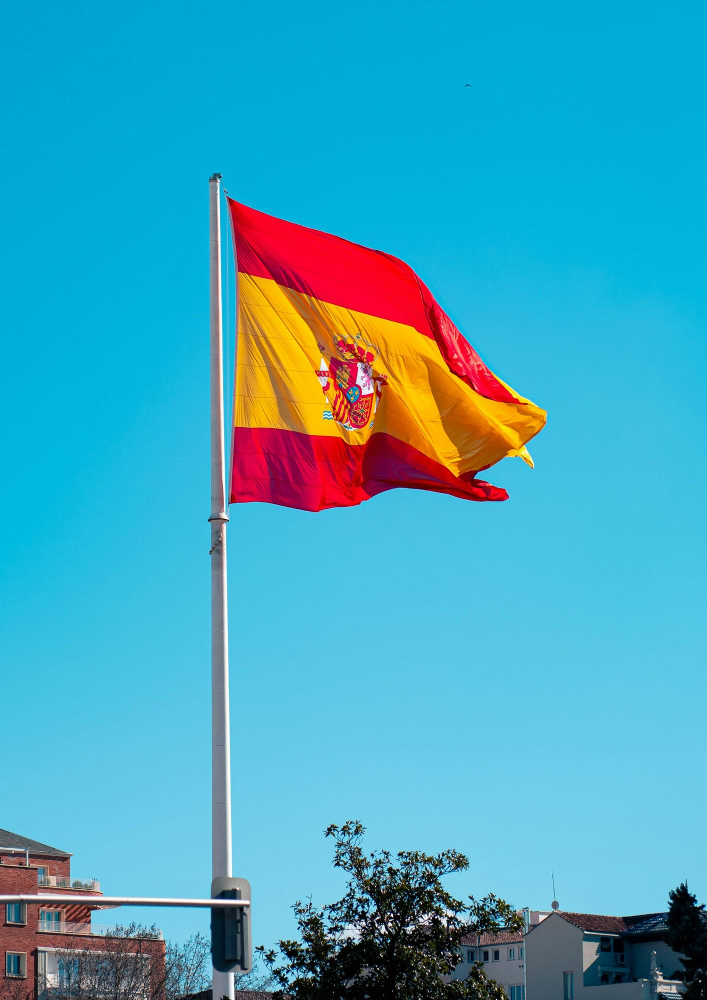
Espanha
CONSULTORIA ROTEIRO
SILVANA E FAMÍLIA
SETEMBRO 2026


Ato de marcar, registrar ou validar algo; deixar a prova de que atravessou uma fronteira — interna ou externa. carimbar na alma uma nova versão de si: mais expandida, com mais cultura, repertório e experiência de vida. É marcar no coração novas histórias, novos lugares e novas pessoas… carimbos que ficam pra sempre.

Sejam bem-vindos,
Silvana e Família!
O país do sol mediterrâneo, dos tapas ao balcão, da Sagrada Família inacabada e da Costa Brava de águas transparentes — onde cultura e natureza dividem o mesmo horizonte.
A Espanha ocupa a maior parte da Península Ibérica e é um dos países mais diversos da Europa em paisagem, gastronomia e idioma. A Catalunha tem o catalão como língua própria e uma capital, Barcelona, que rivaliza com qualquer metrópole europeia em arquitetura, gastronomia e vida urbana.
A Costa Brava — literalmente "costa selvagem" — estende-se ao norte de Barcelona por mais de 200 km: calas de água cristalina, vilas de pescadores medievais e praias entre falésias de granito. Em setembro, com os turistas de agosto embora, é o melhor momento: mar morno, luz dourada e restaurantes que voltam a ter voz própria.
A entrada na Espanha é parte do espaço Schengen — fila rápida para brasileiros, sem visto até 90 dias. Perguntas comuns: "¿Cuánto tiempo se queda?" — responda os dias. "¿Motivo del viaje?" — responda turismo. Podem solicitar reserva de hotel, passagem de retorno e seguro viagem; apresente com calma.
Validade mínima de 3 meses após a saída do espaço Schengen. Fotografar as páginas de identificação e salvar no Google Fotos — e enviar por e-mail como backup de emergência.
Cobertura mínima de €30 mil exigida pelo acordo Schengen. Imprimir a apólice em inglês e levar uma cópia digital — pode ser solicitada na entrada. Recomendamos o SegurosPromo — ativação instantânea.
Sistema de Entrada/Saída digital — substitui o carimbo no passaporte. Coleta de digitais e foto facial na primeira entrada e em cada nova chegada após 3 anos.
Previsto para entrar em vigor, mas com data ainda indefinida — pode não ser exigido na data da viagem. Verifique o status atualizado em travel-europe.europa.eu/etias próximo ao embarque. Se vigente: custo €7, válido por 3 anos, solicitar com pelo menos 96h de antecedência.
O roteiro segue uma linha fluida de norte a sul: chegamos a Barcelona, subimos ao extremo norte da Costa Brava e descemos gradualmente até Valência. Não há idas e vindas nem backtracking — cada deslocamento é um avanço natural em direção ao próximo destino. O resultado é uma viagem que se sente leve mesmo percorrendo quase 600 km de costa, com cada trecho mais curto que o anterior.
Em Barcelona, o carro é um gerador de estresse e de prejuízo. Os estacionamentos centrais cobram entre €30 e €45 por diária — manter o veículo parado na garagem nos três primeiros dias custaria mais de €200 sem utilidade alguma. Barcelona é compacta e tem metrô excelente; o carro entra em cena exatamente quando se torna indispensável: para dar a liberdade e a autonomia que a Costa Brava e o interior catalão exigem. Ao chegar em Valência, o carro é devolvido — a cidade tem metrô, ônibus e táxi de sobra, e o estacionamento central volta a ser um problema desnecessário.
O roteiro foi desenhado para o ritmo de "passear e admirar", com 4 bases que funcionam como âncoras do percurso. A partir de cada uma, todas as atrações do dia estão a no máximo 45 minutos de carro.
🚗 Barcelona → Cadaqués ~2h30 (via AP-7 + N-260)
🚗 Cadaqués → Begur ~1h15 (via Girona)
🚗 Begur → Valência ~4h (via Tossa + AP-7 sul)
Para 3 dias em Barcelona com grupo de 4 pessoas, a melhor combinação é o T-Familiar (8 viagens compartilháveis, €11,50) + bilhetes avulsos complementares. Evita o custo de 4 cartões individuais e cobre a maioria dos deslocamentos diários no metrô e ônibus.
Cobre toda a cidade. Abre até 2h da manhã sex/sáb. App oficial TMB ou Citymapper para rotas.
8 viagens compartilháveis entre o grupo. Ideal para 3–4 pessoas. Recarregável nas máquinas TMB.
Apps: Free Now (táxi oficial), Cabify e Bolt. Táxi preto e amarelo também abundante nas ruas.
Para explorar a Costa Brava, a recomendação é carro alugado. O litoral catalão tem calas e vilas de pescadores mal servidos de transporte público — o carro dá liberdade total de horário, permite parar nas praias escondidas e carregar bagagem com conforto para um grupo de 4.
Rodovias gratuitas: as principais vias que vocês vão utilizar — incluindo a AP-7 na Catalunha e em Valência — tiveram suas concessões encerradas e hoje são 100% gratuitas. Nenhum pedágio nesse trecho do roteiro.
⚠ Radares de velocidade: a Espanha tem fiscalização eletrônica intensa nas autoestradas e estradas secundárias. Os limites mais comuns: 120 km/h em autoestrada, 90 km/h em estrada fora de cidade e 50 km/h em área urbana. O Waze identifica os radares fixos em tempo real — ative antes de sair.
As ruelas internas das vilas medievais (Pals, Besalú) e costeiras (Cadaqués, Tossa de Mar) são proibidas ou estreitas demais para carros de turistas. A regra é simples: não se tenta estacionar dentro do centro — você dirige direto para os bolsões públicos na entrada de cada vila.
A maioria desses bolsões é da Rede Saba — estacionamentos modernos com cancela automatizada. Retire o bilhete na entrada, explore a vila a pé e pague na saída nos totens com cartão internacional (Wise ou Nomad). Custo médio: €2–€3/hora.
As calas escondidas da Costa Brava (Cala Sa Tuna, Cala Aiguablava) têm bolsões de terra ou asfalto logo na descida de acesso ao mar. Em setembro o movimento já está mais calmo, mas o funcionamento é por Zona Azul.
Estacione, vá até a maquininha na calçada e pague com moedas pelo tempo que pretende ficar. Deixe o comprovante visível no painel.
Pague direto pelo celular sem precisar de moedas — e estenda o tempo remotamente se quiser ficar mais.
Ao reservar os hotéis de Cadaqués e do Litoral Central, confirme que o hotel tem estacionamento próprio ou convênio com a Rede Saba local. O carro fica guardado e seguro a noite inteira — e o grupo faz tudo a pé para jantar e passear à noite sem se preocupar com vaga.
L'Eixample (Direito ou Izquierdo) — bairro nobre, plano, ruas largas, ultra iluminado, seguro à noite e cheio de restaurantes a poucos passos.
El Raval e ruelas profundas do Bairro Gótico — movimentados demais à noite, barulhentos e com maior risco de pickpockets.
Orla (arredores da Platja Gran) ou primeiras ruas de subida do centro — permite fazer tudo a pé à noite sem depender do carro.
Hotéis muito isolados no alto da montanha — qualquer jantar fora exige pegar o carro em ladeiras íngremes à noite.
Calella de Palafrugell: região das praias de Port Bo ou Canadell — estilo pé na areia, vila de pescadores, animação noturna tranquila. Begur: Centro Histórico — hotel boutique em casarões no alto da colina, muito estratégico para o roteiro.
Propriedades rurais isoladas nos arredores — bonitas, mas exigem carro para qualquer refeição e aumentam o cansaço em dias já intensos de litoral.
L'Eixample / Gran Vía (perto do Mercado de Colón) — área nobre, elegante, segura e com ruas largas de fácil acesso rodoviário. Alternativa: hotéis modernos na Cidade das Artes e das Ciências — quartos amplos, garagens grandes e muito convenientes para chegada de carro.
Interior do bairro de El Carmen — ruelas medievais estreitas, impossíveis de manobrar e geralmente proibidas para carros de fora.
Compare opções nas regiões indicadas acima, filtre por avaliação e confirme estacionamento incluso — essencial para este roteiro com carro.
→ Pesquisar no BookingNa Espanha, todas as praias são públicas por lei — não existem praias privadas de hotéis ou condomínios. Não é preciso reservar cadeira, pagar entrada ou pertencer a nenhum clube. O grupo chega, estende a toalha e curte.
Sa Tuna, Aiguablava, Calella de Palafrugell — encaixadas entre rochas de granito. Sem Beach Clubs, sem espreguiçadeiras, sem música alta. O costume local é trazer a própria toalha ou canga e deitar na areia ou nos pedregulhos lisos.
🌡️ Água em setembro: ~23°C — morna e cristalina.
🎒 Levar: toalha, protetor solar e água.
🅿 Estacionamento pago na entrada das calas (€3–€6/dia).
Praias urbanas extensas com Chiringuitos (quiosques na areia). Alguns disponibilizam espreguiçadeiras e guarda-sóis por €10–€15/cadeira — sem reserva, por ordem de chegada, paga-se ao atendente na hora. Sem interesse em pagar: sentar na areia ao lado é de graça.
🕗 Melhor horário: até 9h para fotos sem multidão.
🚇 Barceloneta: metrô L4 · estação Barceloneta.
🚗 Malvarrosa: 15 min do centro de Valência de carro.
Com o turismo de massa de julho e agosto embora, setembro é o momento ideal: mar ainda morno (~23°C), areia com espaço de sobra e restaurantes na orla com atenção plena. O grupo de 4 não vai ter nenhuma dificuldade em encontrar um bom lugar.
Usamos a Nomad em todas as nossas viagens. Conta em dólar que permite pagamentos em diversas moedas ao redor do mundo. A transferência em reais é feita via Pix e o saldo é convertido em segundos direto pelo app — sem anuidade, sem taxa de abertura ou manutenção. Abra gratuitamente com o cupom VAMOSCARIMBAR e ganhe até $20 em cashback.
→ Abrir conta Nomad
Cartão aceito em quase tudo, inclusive contactless. ATM: €3–€5 por operação. Reserva em espécie útil para gorjetas e mercados de bairro.
Não obrigatório, mas bem-vindo. Restaurante: 5–10% em jantares. Bar/café: deixar o troco. Táxi: arredondar. Hotel: €1–€2/mala.
Isenção de US$1.000/pessoa. Acima: 50% de imposto. Espécie acima de US$10.000 deve ser declarada. App e-CAC ou totém.
Apple Pay e Google Pay são padrão. Notas €100/€200 raramente aceitas em estabelecimentos pequenos. DCC scam: sempre pagar em EUR — nunca aceitar pagar em reais.
Las Ramblas e metrô (Catalunya, Sagrada Família) concentram batedores de carteira — bolsa à frente.
ATMs: use só dentro de agências (BBVA, CaixaBank, Santander) — nunca os isolados de rua.
Mochila aberta ou celular à mostra em locais lotados = alvo fácil. Cuidado com casacos na cadeira.
Distração em grupo (um conversa, outro passa a mão) — afaste-se. Não há bairro perigoso, mas há furto concentrado.
| Categoria | Econômico | Moderado | Confortável |
|---|---|---|---|
| Café da manhã | €4–€6 | €8–€12 | €15–€25 |
| Almoço | €12–€18 | €20–€35 | €40–€80 |
| Jantar | €18–€28 | €35–€60 | €80–€180 |
| Lanches | €3–€5 | €8–€12 | €15–€25 |
| Transporte | €3–€5 | €8–€12 | €20–€40 |
| Ingressos | €10–€20 | €25–€45 | €50–€80 |
| TOTAL / DIA | €50–€80 | €100–€165 | €220–€450 |
SUV compacto ou médio: €50–€80/dia. O carro é retirado a partir do Dia 04 — 7 diárias totais para o roteiro completo. Sempre contratar o seguro total SCDW — cobre qualquer dano sem franquia e poupa dor de cabeça com a locadora.
A gasolina na Espanha custa em torno de €1,60–€1,80/litro. Com ~900 km percorridos no roteiro, o gasto total estimado é de €90–€120 para o grupo inteiro — ou seja, cerca de €25–€30 por pessoa. Dica: abasteçam em postos de redes de supermercado (BonArea, Plenoil, Ballenoil), bem mais baratos que os de autoestrada (Repsol, BP).
Reembolso de IVA (21% sobre o valor): para residentes fora da UE, em compras acima de €90,16 na mesma loja. Solicitar formulário Tax Free no momento da compra (Global Blue, Planet). Validar com carimbo da alfândega no aeroporto El Prat antes do despacho de bagagem — sem o carimbo não há reembolso. Receber por cartão (mais rápido) ou em espécie nos guichês.
A Catalunha come diferente do resto da Espanha — e orgulha-se disso. A base é o pa amb tomàquet (pão esfregado com tomate e regado de azeite), que acompanha tudo. Na Costa Brava, o peixe fresco do Mediterrâneo dita o cardápio. Em Barcelona, tapas e pintxos convivem com a alta gastronomia.
Horários espanhóis: Almoço entre 14h–16h. Jantar raramente antes das 21h. Comer às 19h é coisa de turista ou nordeuropeu.
Menú del día: Menu fixo no almoço — entrada, prato principal e sobremesa + bebida por €12–€18. Melhor custo-benefício da culinária espanhola.
Tapas: Petiscos que acompanham bebidas. Em Barcelona, normalmente são cobradas. Em Madrid e norte, vêm de graça com a bebida.
Pa amb tomàquet: Pão esfregado com tomate fresco e azeite — base de quase tudo na Catalunha. Pedir sempre que não vier automaticamente.
Vermouth (Vermut): Cultura forte em Barcelona — aperitivo com azeitonas e anchovas no domingo ao meio-dia é ritual local.
Sobremesa: Tempo de mesa após a refeição — ficar conversando. Garçom não traz a conta sem ser chamado: "La cuenta, por favor."
·Chame o garçom como "Perdona" ou "Oye" — natural e sem cerimônia.
·Pão na mesa não é cobrado à parte na maioria dos lugares — mas confirme se vier automaticamente.
·Água pode ser cobrada — pedir "agua del grifo" (da torneira) é grátis e aceito.
·Reserva recomendada em restaurantes de jantar, especialmente fim de semana.
·Cartão aceito em quase tudo — cash para mercados e bares de bairro pequenos.
·Partilhar pratos é normal e incentivado — especialmente em tapas e rações.
App → Espanhol → ⬇ download. Funciona sem internet e resolve qualquer situação.
Aponte para qualquer texto e a tradução aparece em tempo real — perfeito para cardápios e placas em catalão.
Microfone → Conversa → Português / Espanhol → ative Automático. Traduz nos dois sentidos sem apertar botão.
Barcelona começa aqui. Do centro da Plaça de Catalunya, todas as direções levam a algo — e qualquer estrangeiro que passa pela primeira vez para no meio, vira devagar e entende por que essa cidade não sai da cabeça.
A Plaça de Catalunya é o coração geográfico de Barcelona: com 50.000 m², separa o bairro gótico medieval do Eixample modernista. É de cá que nasce tudo — o início das Ramblas, o acesso ao Gòtic e a entrada do Eixample. De manhã cedo, com as fontes ainda ligadas e poucos turistas, é o melhor momento para sentir a escala da praça.
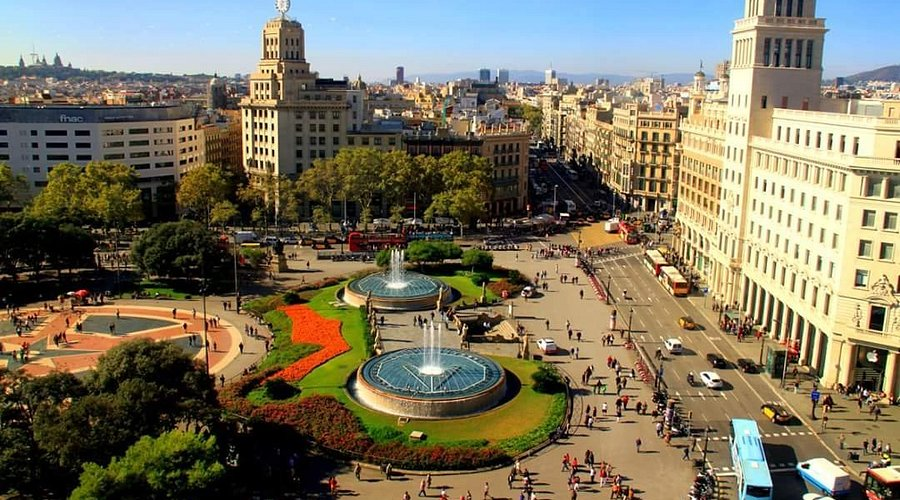
Carimbe No centro da praça, na frente da escultura de Deessa com as fontes ao fundo — chegar antes das 09h30 para ter a praça ainda com poucos turistas e a luz lateral da manhã.
Dica A praça é o local com maior concentração de batedores de carteira de Barcelona. Bolsas à frente, documentos no bolso interno de roupa. Pombos nos ombros = distração clássica de golpe.
La Rambla não é uma rua — é um estado de espírito. Qualquer hora do dia tem um personagem diferente: o aposentado catalão tomando café às 8h, o turista com mala às 11h e o músico improvisando às 22h. Desça devagar.
La Rambla é um boulevard de 1,2 km do centro histórico até o Mediterrâneo — o nome vem do árabe ramla (areia), referência ao riacho sazonal que existia aqui até o século XVIII. Ao longo da descida: a Fonte de Canaletes (quem beber volta a Barcelona, dizem), bancas de flores, performers estátua e, na metade, a entrada da Boqueria. Descer devagar, no ritmo da cidade.
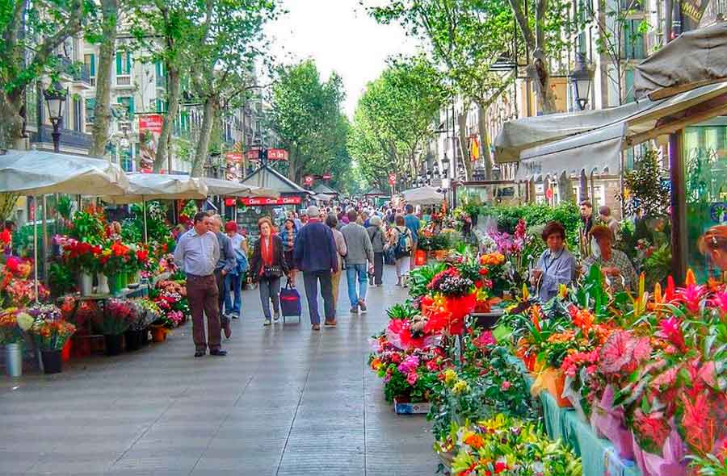
Carimbe No centro do boulevard com as árvores formando um corredor verde acima — olhando na direção do mar. Melhor antes das 10h, com luz lateral entrando pelas árvores e menos gente no caminho.
Dica Os cafés com mesas na calçada das Ramblas cobram 3–4× o preço de qualquer bar das ruelas laterais. Para um café ao estilo local (€1,50), entrar em qualquer bar 30 metros para dentro do Bairro Gótico.
O Mercat de la Boqueria existe desde 1217. Oitocentos anos de história separados de você por uma entrada de ferro e vidro. Dentro, é cor, cheiro de anis e jamón e barulho de gente que veio comprar de verdade — não apenas fotografar.
O Mercat de Sant Josep de la Boqueria existe desde 1217 — a estrutura de ferro e vidro que vemos foi construída em 1840 sobre um convento demolido. Mais de 200 bancas com frutas, peixes, carnes e especiarias. O cheiro de jamón ibérico começa antes de entrar. As bancas de frutas coloridas da entrada são as mais fotogênicas; os bares do interior têm preço turístico — os funcionários do mercado indicam os melhores balcões.

Carimbe Nas bancas de frutas coloridas da entrada — a composição natural de frutas cortadas em leques e sucos alinhados cria uma paleta vibrante sem nenhum esforço. Chegar logo na abertura para cor viva e bancas completas.
Dica Sucos de frutas frescas nas bancas da entrada custam €2–2,50. As mesmas bancas no interior da Boqueria cobram €4–6. Comprar sempre nas da frente — são as mesmas frutas, preço diferente.
A Plaça Reial é um segredo à vista de todos. Está colada nas Ramblas, mas quem não sabe virar à esquerda na hora certa passa direto sem ver. Lá dentro: palmeiras altas, arcos em volta e a calma de uma praça que decidiu não participar do caos da rua principal.
Construída em 1848 no local de um convento franciscano, a Plaça Reial é uma praça fechada com pórticos neoclássicos, palmeiras centenárias e fonte central das Três Graças — concebida como pulmão silencioso dentro do caos das Ramblas. Os lampiões de ferro das esquinas foram desenhados por Gaudí em 1879, seu primeiro trabalho público aos 27 anos: capacetes alados e serpentes nos braços, o estilo orgânico já presente. Poucos param para olhar para cima.
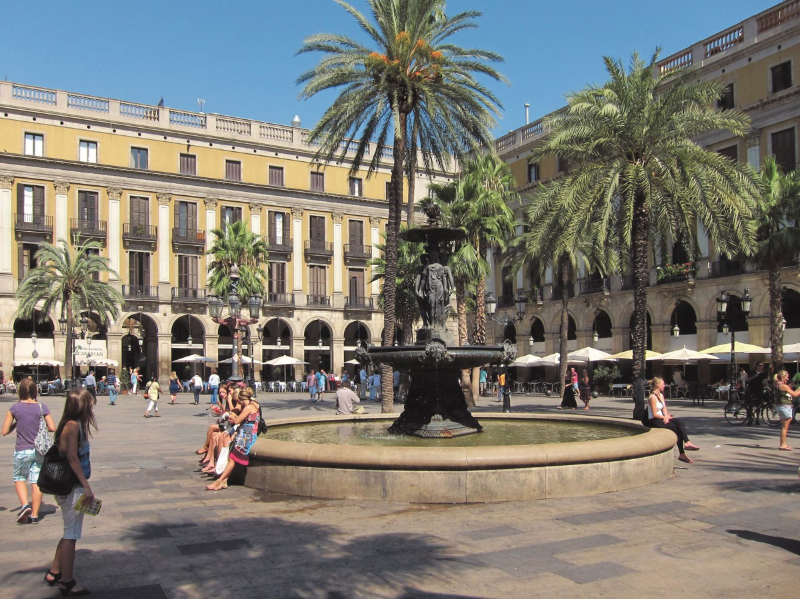
Carimbe Dentro dos pórticos com as colunas neoclássicas ao redor e a palmeira central ao fundo. Ao meio-dia a luz entra vertical pela claraboia da praça e ilumina o pavimento de forma cinematográfica.
Dica Os lampiões dos postes são de Gaudí (1879) — seu primeiro trabalho público, antes de qualquer coisa famosa que o tornou conhecido. Vale parar, olhar para cima e apontar para as serpentes.
O Bar del Pla é um clássico do Bairro Gótico sem fazer nenhum esforço para parecer um. Balcão de mármore, garçons de avental preto e tapas que levam a sério o produto local — jamón ibérico cortado na hora, croquetas cremosas, bomba de patata com aioli e o obrigatório pa amb tomàquet que chega antes de tudo. O almoço aqui é o melhor custo-benefício do centro histórico: ingrediente bom, sem cerimônia e sem conta surpresa. Alternativa igualmente excelente: o El Xampanyet (Born, Carrer de Montcada) — mais clássico e com anchovas impecáveis.
Sanduíches gigantes feitos na hora em bagetes quentes com carnes grelhadas e molhos artesanais. Uma das filas mais honestas do centro histórico.
Cuidado para não confundir: a Catedral de Santa Eulàlia é a catedral medieval de Barcelona — não a Sagrada Família, que é mais nova (em construção desde 1882) e em outro bairro. A catedral gótica é mais antiga, mais sombria e muito menos fotografada. E por isso mais ela.
Construída entre os séculos XIII e XV sobre uma basílica visigótica do século V — a fachada neogótica foi acrescentada apenas no século XIX. Por dentro: escuro, alto, silencioso, luz entrando pelos vitrais. O claustro medieval guarda o segredo mais catalão da cidade: 13 gansos brancos que vivem lá desde o século XIV, cada um representando um ano da vida de Santa Eulàlia, martirizada aos 13 anos. Os gansos ciscam enquanto os turistas passam. Entrada pelo lado esquerdo, gratuita.
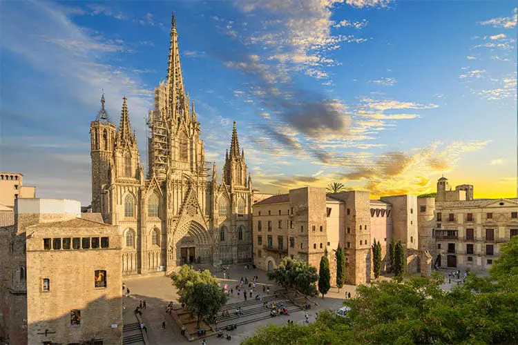
Carimbe Na escadaria frontal da fachada neogótica — o ângulo da escada com as torres ao fundo funciona tanto de frente quanto de lateral. No fim da tarde a pedra ganha tom dourado.
Dica O claustro com os 13 gansos fica atrás da catedral, entrada pelo lado esquerdo, e é gratuito. Pouquíssimos turistas entram — é um dos segredos mais acessíveis do Bairro Gótico.
Um dos cartões postais mais fotografados do Bairro Gótico — e também um dos mais enganosos. A ponte parece ter saído da Idade Média, mas foi construída em 1928. Os barceloneses chamam de 'gótico de papelão'. Não importa: a foto embaixo é espetacular.
Uma das ruas mais fotogênicas do Bairro Gótico: estreita, pedras irregulares, fachadas de pedra amarelada. No meio da rua, o Pont del Bisbe — uma passarela em arco gótico construída em 1928, décadas após o entorno medieval. A ornamentação é propositalmente exagerada para imitar a época. Na base do arco central, uma caveira com faca: símbolo de maldição política catalã, segundo os moradores. Ficção ou não, a foto embaixo é espetacular.
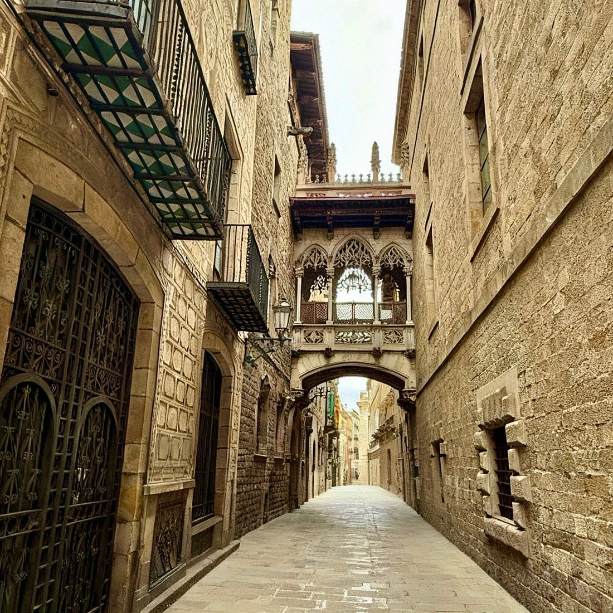
Carimbe Direto debaixo do arco da ponte — olhar para cima com os detalhes góticos ao redor. Colocar uma pessoa no centro do arco e fotografar do chão para cima com pedras medievais emoldurando.
Dica A caveira com a faca na base do arco central do Pont del Bisbe existe de verdade — levanta a cabeça para ver. Local diz que é um símbolo de praga política. Foto obrigatória para quem for fotógrafo do grupo.
Existe em Barcelona uma praça silenciosa que a maioria dos turistas passa a 30 metros sem encontrar. A Plaça de Sant Felip Neri guarda nas paredes a memória de um bombardeio que matou 42 crianças em 1938. A beleza e o horror dividem o mesmo metro quadrado de pedra.
Uma das poucas praças silenciosas do Bairro Gótico: pequena, pedras medievais, Igreja do século XVIII, banco de pedra nas bordas. Nas paredes da fachada há marcas circulares que parecem erosão — são buracos de metralhadora do bombardeio fascista de janeiro de 1938. Quarenta e duas pessoas morreram aqui, a maioria crianças que usavam o porão da Igreja como abrigo. As marcas foram preservadas intencionalmente. Barcelona não apagou.
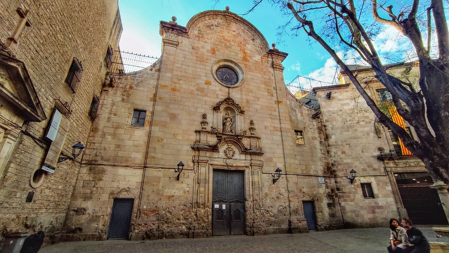
Carimbe Sentado no banco de pedra com a fachada da Igreja ao fundo — foto íntima, luz difusa, sem pressa. A praça quase não tem turistas e o silêncio é real.
Dica As marcas redondas nas paredes da Igreja são buracos de metralhadora do bombardeio de 1938. Observar de perto — são profundas, com a pedra partida ao redor. A praça servia de abrigo e foi atacada durante uma corrida das crianças do abrigo para a escola.
No fim do dia, quando a luz do Mediterrâneo vira dourada, o calçadão da Barceloneta é um dos lugares mais bonitos de Barcelona. O mar à frente, as palmeiras à direita e o cheiro de sal misturado com óleo de oliva dos bares de praia. Foi aqui que a cidade descobriu que tinha mar.
Bairro de pescadores fundado em 1753 com traçado em grade perfeita — o único de Barcelona que escapou da reforma modernista do Eixample. O calçadão (passeig marítim) de 4 km foi construído para as Olimpíadas de 1992, quando a cidade decidiu abraçar o mar. Ao fundo, a escultura "El Peix" de Frank Gehry: 54 metros de cobre e aço que incendeiam com a luz do entardecer.
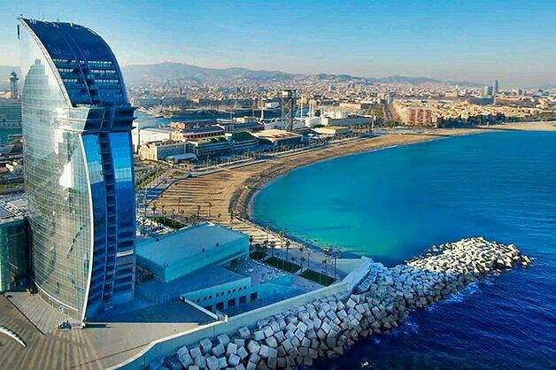
Carimbe No calçadão com o mar ao fundo e a escultura El Peix de Frank Gehry à direita ao fundo — melhor no início da tarde quando o sol ainda está alto e o mar azul.
Dica "El Peix" (o peixe de cobre de Frank Gehry) fica nos arredores do Hotel Arts, na entrada do Port Olímpic — 10 min a pé pelo calçadão. Ao entardecer com sol a pino, a escultura incendeia. Foto obrigatória.
O túnel dos tubarões é aquele tipo de experiência que nenhum adulto consegue fingir que não está impressionado. Tubarões, arraias e peixes-lua passando acima e dos dois lados ao mesmo tempo — o vidro curvo cria a sensação exata de estar dentro do Mediterrâneo.
35 aquários temáticos, mais de 11.000 animais de 450 espécies. A atração principal é o túnel subaquático de 80 metros — corredor de vidro curvo com tubarões-reef, arraias e tartarugas passando acima e dos dois lados enquanto a esteira avança devagar. Para grupo de 4, comprar os bilhetes online antecipadamente em aquariumbcn.com — evita fila e sai mais barato.

Carimbe No túnel dos tubarões — braços abertos, olhar para cima com os peixes passando sobre o vidro curvo. Modo retrato do celular, sem flash, com a luz azul do aquário como fundo.
Dica Comprar os 4 bilhetes online com antecedência em aquariumbcn.com — evita a fila e geralmente é mais barato. Em setembro, o aquário fecha às 20h, então entrar às 18h15 garante tempo suficiente para o túnel e os principais aquários.
€25 adulto · €18 criança (3–12 anos) · €22 sênior — valores aproximados, confirmar no site. Comprar online para o grupo de 4 com antecedência: evita fila e costuma sair mais em conta. Horário setembro: 10h–20h — entrar às 18h15 garante tempo para o túnel e os principais aquários.
O 7 Portes é uma instituição em Barcelona — funciona ininterruptamente desde 1836 no mesmo local do Port Vell, servindo arrozes e paellas de frutos do mar legítimos. O salão tem tecto alto, espelhos antigos e garçons de paletó preto que trabalham no restaurante há décadas. A paella de mariscos chega à mesa na frigideira de ferro ainda borbulhando, com o socarrat (a crostinha crocante do fundo da panela) perfeito. O arròs negre (arroz negro com tinta de lula) é o prato favorito dos barceloneses. Reserva obrigatória — não aceitam walk-in para grupos. Alternativa excelente: Can Solé (Carrer de Sant Carles, 4), mais intimista e igualmente clássico.
Mini sanduíches tradicionais espanhóis em pão de trigo. Na quarta e no domingo, quase todo o cardápio cai para €1. Ideal para encerrar a noite no Port Vell sem gastar.
Gaudí começou em 1882 e calculou que a obra levaria dois séculos. Estava certo. A Sagrada Família ainda não está pronta — e é a construção mais visitada da Espanha. O interior é diferente de qualquer catedral que vocês já viram.
A Sagrada Família está em construção desde 1882, com previsão de conclusão em 2026 — ano do centenário da morte de Gaudí. O interior inaugurado em 2010 pelo Papa Bento XVI surpreende: colunas que parecem árvores de pedra, vitrais que filtram luz laranja e azul, e uma nave que é ao mesmo tempo grandiosa e acolhedora. A cripta-museu no nível subterrâneo explica a história da construção e a genialidade estrutural do projeto.
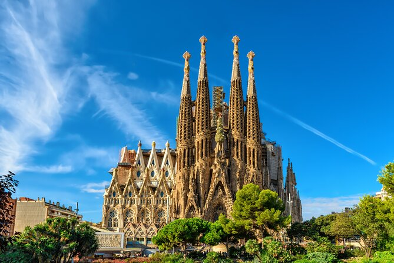
Carimbe Do interior, na nave central, olhar para cima entre as colunas-árvore. Chegar às 09h15 para o lote das 09h30 — a luz dos vitrais da fachada leste (azul fria) e oeste (laranja quente) ainda está equilibrada.
Dica Comprar o bilhete com acesso às Torres de Gaudí — a subida dá a vista mais surreal de Barcelona, com as esculturas de pedra ao nível dos olhos e a cidade lá embaixo.
€36 com torres · €26 básico (só nave) — confirmar no site. Horário: 09h–20h (seg–sáb) · 10h30–20h (dom). Reservar em julho/2026: os ingressos esgotam com semanas de antecedência. Lote das 09h30 é o menos lotado do dia.
A Casa Milà foi apelidada de 'La Pedrera' — a pedreira — por ironia, por parecer um bloco de pedra ondulada. O apelido grudou. Hoje é Patrimônio Mundial da UNESCO e a parada aqui é para contemplar uma das fachadas mais radicais já construídas.
Construída entre 1906 e 1912, a fachada de pedra calcária não tem uma linha reta sequer — Gaudí moldou o calcário como se fosse argila, criando um edifício que parece esculpido pelo vento. O terraço com as chaminés torcidas é acessível com ingresso; a parada aqui é para contemplação da fachada e fotos antes de seguir para a Casa Batlló, logo abaixo no Passeig de Gràcia.
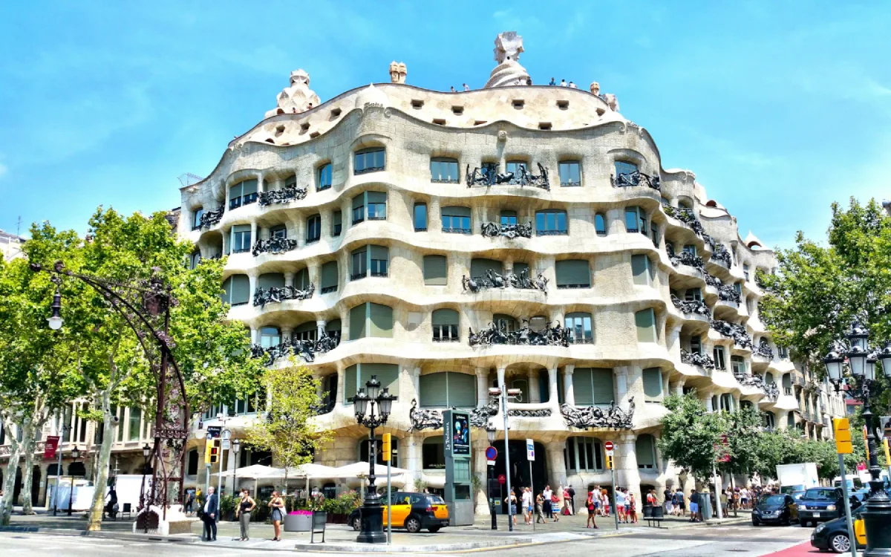
Carimbe Da calçada oposta, enquadrar a fachada inteira — a textura ondulada da pedra muda conforme a luz. Incluir a linha do Passeig de Gràcia ao fundo para dar escala.
Dica A Casa Milà fica a 2 minutos a pé da Casa Batlló descendo o Passeig de Gràcia. Não chamar táxi entre as duas — ir a pé pelo boulevard modernista é parte da experiência.
€28/pessoa — interior completo com terraço das chaminés torcidas · 09h–20h30 (todos os dias) · comprar em lapedrera.com. Passar pela fachada e contemplar do lado de fora é gratuito. ⭐ Se for escolher somente uma entre Pedrera e Batlló, recomendamos a Casa Batlló — experiência interior mais imersiva e única.
A Casa Batlló foi reformada por Gaudí entre 1904 e 1906. A fachada azul e verde com ossos na base foi chamada pelos barceloneses de 'Casa dos Ossos'. O teto é escamas de dragão. O interior é um coral de formas orgânicas. É provavelmente a casa mais criativa da Europa.
A fachada de mosaico azul e verde representa São Jorge matando o dragão: as colunas são ossos, o teto é escamas do dragão, a chaminé é a lança de São Jorge. O interior surpreende ainda mais — a escada que sobe como um coral marinho, o salão principal banhado de luz azul do pátio central e o terraço com chaminés retorcidas. O audioguia imersivo inclui narração em primeira pessoa e efeitos sonoros que tornam a visita cinematográfica.
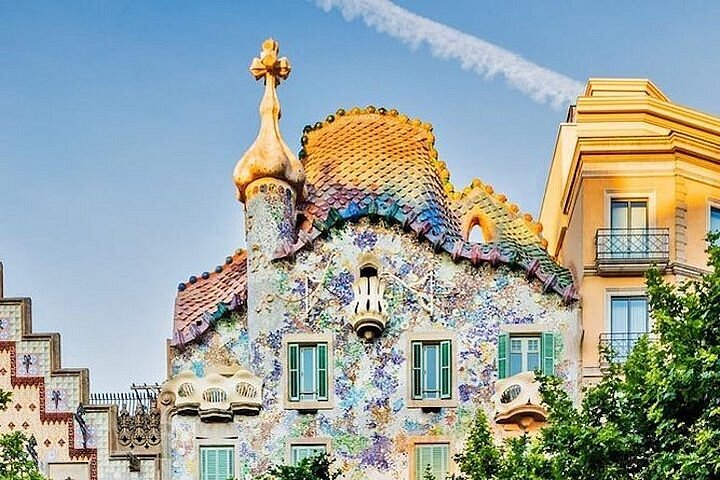
Carimbe Da calçada, foto de baixo para cima capturando a fachada inteira com o teto de escamas azuis ao topo. O mosaico azul e dourado capta qualquer luz — funciona tanto de manhã quanto à tarde.
Dica Comprar o bilhete com audioguia imersivo (Magic Nights ou similar) — é diferente de qualquer audioguia: narração em 1ª pessoa com efeitos sonoros e música ambiente por sala. Vale o preço extra.
€35 ingresso padrão com audioguia imersivo — confirmar no site. Horário: 09h–22h (todos os dias). Comprar antecipado online: filas presenciais são longas e não há garantia de entrada no horário.
Um dos restaurantes mais bonitos de Barcelona: quatro ambientes temáticos num edifício histórico reformado, cada um com sua própria proposta — tapas, mariscos, carnes e cervejaria. Tudo em espaço compartilhado com design editorial. Alternativa mais casual e igualmente excelente: Vinitus (Carrer del Consell de Cent 333) — famoso pelas tapas de solomillo e croquetas com melhor custo-benefício da área.
Cafés e padarias da avenida com sanduíches prensados, saladas generosas e tortas salgadas. Alternativa prática para não perder ritmo entre os monumentos do Eixample.
O Park Güell foi concebido como loteamento residencial de luxo em 1900 — e fracassou. Só 3 dos 60 lotes foram vendidos. O que restou foi transformado em parque público em 1923 e recebe 4 milhões de visitantes por ano. O fracasso mais bonito de Gaudí.
A zona monumental (área com ingresso) tem o terraço com mosaicos coloridos, as colunas dóricas que sustentam a esplanada e as escadarias com a famosa salamandra de mosaico — o símbolo mais fotografado do parque. Do terraço superior, a vista de Barcelona e do Mediterrâneo ao fundo é de tirar o fôlego. O resto do parque é gratuito e igualmente bonito.
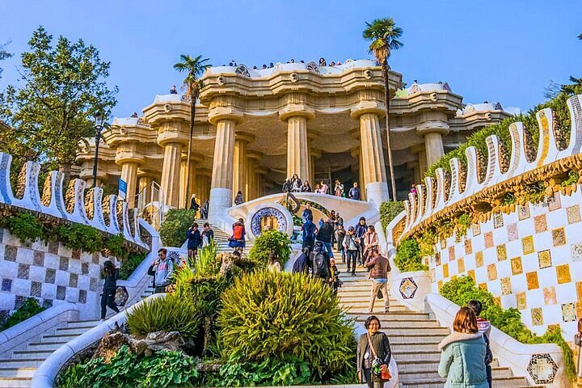
Carimbe Com a salamandra de mosaico — ajoelhar no mesmo nível da escultura para pegar o parque ao fundo. Fim de tarde tem luz dourada e o fluxo de turistas já diminuiu.
Dica Comprar o ingresso para o slot das 16h00–16h30: luz mais bonita (dourada) e menos fluxo. A entrada é controlada por horário — sem ingresso não se entra na zona monumental.
€10 adulto · €7 sênior e criança (7–12 anos) · gratuito até 6 anos. Horário: 09h30–19h30 (todos os dias). Entrada com horário marcado — comprar em julho/2026 online.
O bairro de Gràcia é o mais boêmio e jovem de Barcelona — praças cheias de cadeiras, bistrôs sem cartão na porta, ambiente tranquilo. O Gasterea fica na animada Plaça del Sol e serve culinária catalã contemporânea — pratos do dia com ingredientes de mercado, lista de vinhos naturais e preços honestos. Alternativa igualmente excelente: explorar qualquer bistrô com mesas na praça ao redor — o bairro não decepciona.
Balcões italianos do bairro de Gràcia onde fatias enormes de pizza saem por €3 a €4. Fazer como os jovens locais: comprar na janela e comer sentado nos bancos da Plaça del Sol.
O Arco do Triunfo de Barcelona não tem nada a ver com guerras. Foi construído em 1888 como entrada principal da Exposição Universal — e é feito de tijolos vermelhos, não de pedra. Um arco de triunfo de paz.
Construído em 1888 pelo arquiteto Josep Vilaseca como portal da Exposição Universal, é o único arco do triunfo da Europa em estilo neomudéjar — tijolos vermelhos com ornamentos mouríscos. Tem 30 metros de altura; o friso no topo mostra Barcelona recebendo as nações do mundo com os braços abertos. A Passeig de Lluís Companys, boulevard de palmeiras à frente, desce direto ao Parque da Ciutadella.
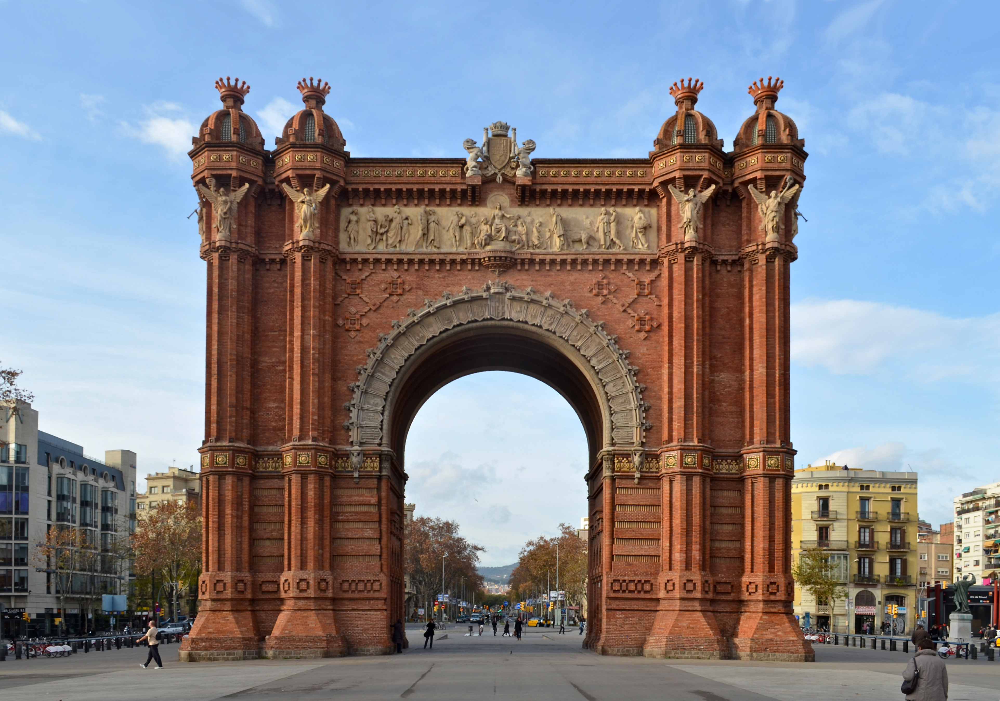
Carimbe Do boulevard de palmeiras, enquadrar o arco com a alameda ao fundo — o corredor verde e o arco vermelho criam um contraste cinematográfico com luz lateral de manhã.
Dica Fazer a foto do arco e já descer caminhando pelo boulevard de palmeiras em direção ao parque — é o trajeto mais bonito e leva exatamente ao Parque da Ciutadella.
O Parque da Ciutadella é o pulmão verde central de Barcelona. A cidadela militar que deu nome ao parque foi demolida pelos próprios catalães em 1869 — que a odiavam por ter sido usada para controlar a população. No lugar: árvores, lago e a maior cascata ornamental da Europa.
Projeto de paisagismo de 1872 no local da fortaleza borbônica que oprimiu a cidade por mais de um século. No parque: lago com barquinhos de aluguel, o Museu de Ciências Naturais e a Cascata Monumental — obra de teatro arquitetônico co-projetada pelo jovem Gaudí aos 23 anos, antes de qualquer coisa que o tornaria famoso.
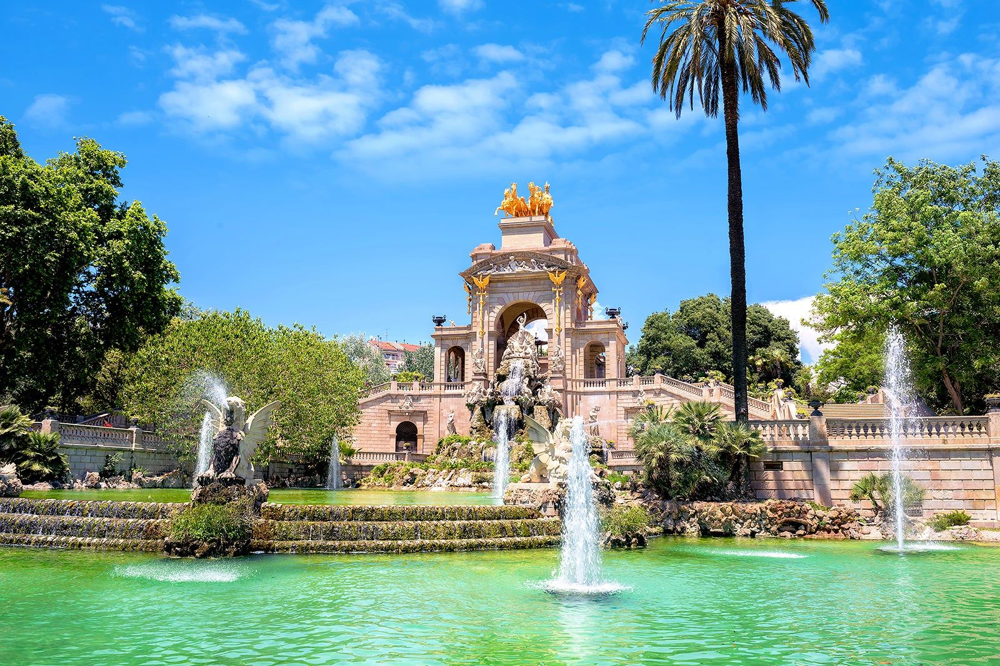
Carimbe Na Cascata Monumental de perto, pegando os relevos e a água caindo — de manhã a luz atravessa as árvores e ilumina lateralmente. Detalhe: ninguém sabe que Gaudí projetou isso.
Dica A cascata foi co-projetada por Gaudí aos 23 anos, antes de qualquer obra famosa. O parque quase não divulga isso. Vale contar para o grupo — e tirar foto com o conhecimento.
O Camp Nou tem capacidade para 99.354 torcedores — o maior estádio da Europa. Reabriu em 2025 após reforma completa como Spotify Camp Nou. A visita agora inclui museu interativo com tecnologia e paixão. Para quem ama futebol, parada obrigatória. Para quem não liga — ainda assim impressiona.
A visita inclui: vestiário dos jogadores, banheira de imersão, túnel de saída para o campo, arquibancadas para foto do campo vazio e museu com troféus e instalações interativas. Tour leva entre 1h30 e 2h dependendo do ritmo. A nova estrutura pós-reforma tem áreas que antes eram inacessíveis ao público.
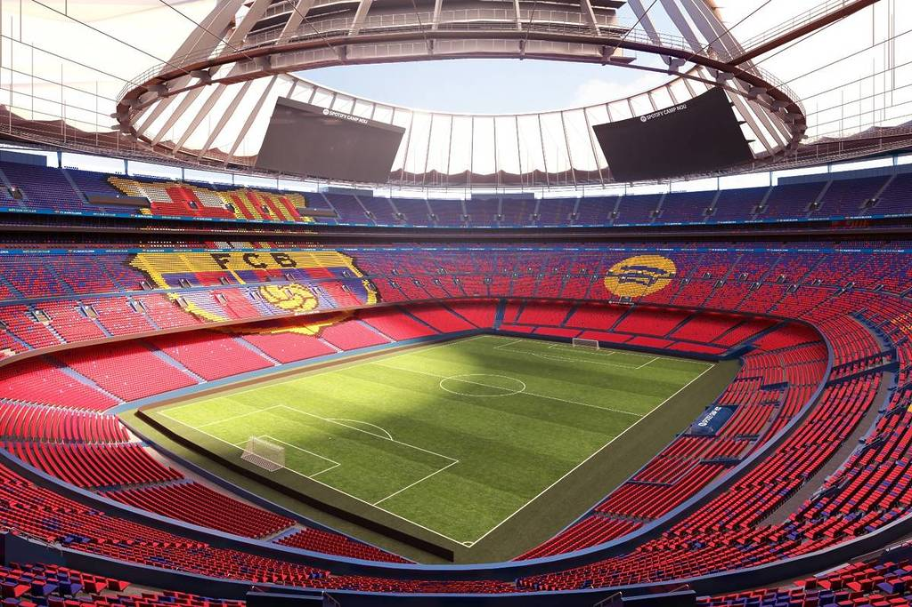
Carimbe No campo, olhando para cima com a arquibancada ao fundo — 99 mil lugares vista de baixo impressiona mesmo vazia. Foto do grupo no túnel de saída com a luz do campo ao fundo.
Dica Comprar o bilhete 'Camp Nou Experience' online com antecedência — fila presencial é longa. Melhor horário: 10h45 para entrar às 11h, com menos grupos escolares.
€28 Camp Nou Experience (museu + tour) — confirmar no site. Horário: 10h–19h (todos os dias; confirmar em dias de jogo). Comprar online antecipado — sem reserva não há garantia de entrada.
O Arenas de Barcelona é um shopping instalado dentro de uma antiga arena de touros do século XIX — a cúpula dourada é de Rafael Moneo. O terraço superior tem vista circular de 360° da Plaça d'Espanya, das Torres Venecianas e da Montanha de Montjuïc ao fundo. Há vários restaurantes no topo: escolher qualquer um com mesa na varanda — a vista vale mais que qualquer cardápio.
Subsolo do Shopping Arenas: sanduíches na bagete por €3, salgados quentes da padaria por €1,50 e bebidas geladas a preço de custo. Comer nas mesas da praça ou nos bancos externos — com vista para o Palau Nacional.
O Teleférico de Montjuïc cruza a montanha em cabine fechada suspensa — uma das formas mais panorâmicas de subir para qualquer lugar em qualquer cidade da Europa. Ao longo do percurso: vista do porto, da cidade e do Mediterrâneo ao mesmo tempo.
Sobe desde a estação Paral·lel até a fortaleza de Montjuïc em 7 minutos, passando sobre o porto e a Barceloneta — dá para ver navios de carga e cruzeiro ao lado, a cidade ao fundo e o mar se abrindo ao horizonte. O piso e o teto de vidro da cabine tornam a subida uma experiência suspensa.

Carimbe Dentro da cabine, foto para baixo — a cidade de Barcelona vista do alto com o porto e o mar ao fundo é uma das fotos mais impressionantes da viagem inteira.
Dica Comprar bilhete de ida e volta — a descida oferece ângulo diferente da cidade. Subir pela estação Paral·lel (metrô L2 ou L3) é mais rápido que pela Barceloneta.
€19 ida e volta · €17 online (10% desconto). Horário: 10h–19h (setembro). Comprar em telefericdemontjuic.cat.
O Castelo de Montjuïc tem história pesada: construído em 1640 e usado pelos espanhóis para aterrorizar Barcelona por séculos. Em 1940, o presidente catalão Lluís Companys foi fuzilado aqui. Em 1960, foi devolvido à cidade. Hoje a vista que se tem de lá em cima é provavelmente a mais bonita de Barcelona.
A antiga fortaleza militar a 173 metros de altitude oferece a vista mais panorâmica de toda Barcelona: porto histórico, Barceloneta, mar aberto, bairros e ao fundo as montanhas. Os bastiões, fossos e mirantes são acessíveis; um café no terraço tem mesas com vista para o mar. Em setembro, o sol poente ilumina a cidade em dourado a partir das 17h30.
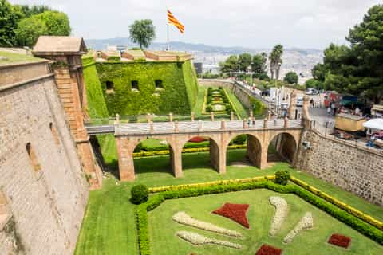
Carimbe Do terraço superior, olhando na direção do mar — Barcelona inteira no horizonte com o Mediterrâneo ao fundo. Melhor entre 17h30 e 18h30 com luz dourada.
Dica O café do terraço da fortaleza tem mesas com vista para o mar — parar para uma cerveja enquanto o sol baixa sobre Barcelona. O momento mais bonito e mais tranquilo do dia.
€5 adulto · €3 sênior/criança — gratuito aos domingos a partir das 15h. Horário: 10h–20h (setembro). Bilheteria na entrada, sem necessidade de reserva antecipada.
Um clássico de Barcelona desde 1979 — balcão de mármore, sem mesas (ou quase), garçons de avental branco que ficam do outro lado servindo sem parar. O prato é o que chega: croquetas, camarão à la plancha, peixe do dia, patatas bravas. Não existe cardápio formal. Alternativa igualmente excelente (e mais fácil de conseguir mesa): El Xampanyet (Carrer de Montcada, 22) — bar de espumante Cava catalão com tapas frias, anchovas impecáveis e garrafas de Cava saindo sem parar.
Rede catalã de hambúrgueres artesanais com carnes rústicas e batatas caseiras. Um dos melhores burgers de Barcelona por um preço honesto — perfeito para fechar o dia mais intenso do roteiro.
Montserrat não é uma montanha — é um conjunto de monólitos de conglomerado com 1.236 metros, saídos do planalto catalão como se alguém os tivesse empurrado de baixo. O mosteiro ficou encravado aqui no século IX. A lógica é medieval: se é inacessível, é sagrado.
O Santuário abriga a Moreneta — imagem da Virgem Negra do século XII, padroeira da Catalunha. A Basílica neogótica tem a estátua num altar dourado ao fundo; a fila para tocar a mão dura 20–30 min. A Escolania (coro de meninos) canta geralmente às 13h no interior — confirmar horário no site, pois varia em setembro. Um dos momentos mais arrepiantes de toda a viagem.

Carimbe Do terraço diante da Basílica, foto com as torres de conglomerado ao fundo — as formações rochosas arredondadas enquadram naturalmente a fachada neogótica.
Dica A Escolania canta geralmente às 13h — confirmar em montserratvisita.com. Vale esperar no interior da Basílica: é o coro infantil mais antigo da Europa e a acústica da nave é impressionante.
Chegando de carro, não há cremalheira. €6 só Basílica + Trono da Moreneta · €23 Basílica + Funicular Sant Joan ★ (recomendado — inclui o mirante). Comprar em montserratvisita.com. 🅿 Estacionamento: €7 fixo na entrada do complexo — pagar na saída com cartão.
O Funicular de Sant Joan sobe para além do mosteiro — para o planalto alto entre as torres de pedra, onde não tem nada além de vento, silêncio e vista infinita. São 15 minutos a pé do ponto de chegada até o mirante mais alto acessível sem escalar.
O funicular parte do nível do mosteiro e sobe 550 metros de altitude em 5 minutos até o planalto entre as formações rochosas. Do ponto de chegada, trilha fácil de 20 min leva ao mirante de Sant Joan — vista de 360° das torres de conglomerado, do vale lá embaixo e, em dias claros, do Mediterrâneo ao longe.
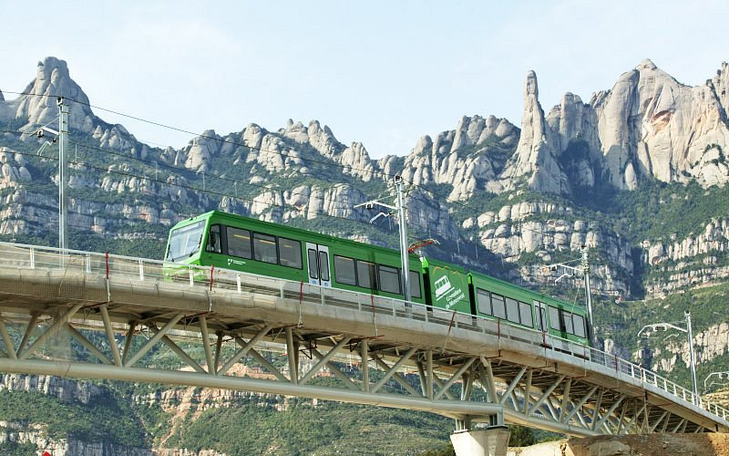
Carimbe No mirante de Sant Joan com as torres de pedra ao redor — o grupo inteiro enquadrado com a paisagem de Montserrat ao fundo. Escala inacreditável mesmo em fotos.
Dica Nos dias de alta temporada o funicular pode ter fila — chegar antes do meio-dia garante entrada mais tranquila. Comprar online em montserratvisita.com evita espera na bilheteria.
Incluído no pacote Basílica + Funicular (€23) — comprar em montserratvisita.com. Horário: 10h–17h (setembro). Não é vendido separado da Basílica.
Restaurante oficial do complexo de Montserrat, com varanda com vista para o vale e as formações rochosas. Cardápio de culinária catalã tradicional — adequado para o ritmo do dia, que ainda tem longa estrada pela frente. Alternativa mais rápida e igualmente boa: as feiras na entrada do mosteiro vendem sanduíches artesanais com queijos locais e embutidos catalães — prático para comer na varanda e gastar menos tempo.
Queijo fresco Mató de Montserrat com mel nas barraquinhas de rua por €4, ou embutidos locais e pães do mercadinho do próprio complexo. A alternativa mais autêntica antes da descida para Cadaqués.
~160 km · ~2h de estrada — rodovia AP-7 em direção ao norte (sentido Girona/França). Estrada excelente, duplicada, tranquila de dirigir. Momento perfeito para revezar na direção e escutar música.
Cadaqués é isolada por uma cadeia de montanhas. A estrada GI-614 (Roses → Cadaqués) tem mais de 100 curvas fechadas em 15 km — leva 40 a 45 minutos. Dirija com calma e aproveite o visual cinematográfico do Parque Natural do Cap de Creus. Se alguém do grupo tiver histórico de enjoo em estradas com curvas, tomar preventivo antes de sair de Montserrat.
Cadaqués quase não tem vagas na rua — confirmar com o hotel se tem estacionamento reservado. Caso contrário, o Parking Saba fica na entrada da vila, a 10 min a pé do centro. Deixar o carro na entrada e seguir a pé pelo centro histórico.
Após o check-in, a tarde é de descida ao ritmo de Cadaqués — a vila pede isso. Caminhada pela orla, as casinhas brancas, os barcos de pescadores na areia e a subida até a Igreja de Santa Maria para a vista clássica dos telhados contra o mar.
Cadaqués é a vila que o Mediterrâneo guardou para si. Isolada pelas montanhas, só tem acesso por uma estrada de 100 curvas — e esse isolamento preservou tudo: as casas brancas com portas azuis, os barcos de madeira na areia e o silêncio que Barcelona já não tem.
Cadaqués vive de pescadores, artistas e Dalí — o surrealista morou aqui por décadas e o mar desta baía aparece em dezenas de suas telas. A orla combina barcos antigos com restaurantes de frutos do mar; o centro tem galerias de arte e ateliês. A Igreja de Santa Maria, no alto da vila, oferece a vista clássica: telhados brancos descendo em cascata até o mar azul — melhor ao entardecer.

Carimbe Da Igreja de Santa Maria ao entardecer — telhados brancos descendo até o mar com a luz dourada. É a foto mais icônica de Cadaqués e a razão pela qual a chegada no fim do dia é perfeita.
Dica Cadaqués é pequena e se descobre a pé — deixar o carro no estacionamento e não tentar dirigir pelo centro histórico. As ruelas têm menos de 2 metros de largura em vários pontos.
Dos mesmos chefs do Disfrutar de Barcelona (3 estrelas Michelin), o Compartir é o projeto mais íntimo e igualitário: pratos modernos com ingredientes do mar de Cadaqués, pensados para ser divididos no centro da mesa. Ambiente descontraído, sem cerimônia de haute cuisine. Reservar com meses de antecedência — é um dos restaurantes mais disputados da Costa Brava. Alternativa mais tranquila (e igualmente deliciosa): Casa Nun, com mesas pé na areia e peixes grelhados na brasa fresquíssimos.
Padaria tradicional do centro com empanadas salgadas de atum ou carne e pizzas caseiras por €3 a €4 a fatia. Os doces típicos da vila são o encerramento perfeito para a primeira noite no Mediterrâneo.
Única residência permanente de Dalí — construída e reconstruída por 40 anos até virar um labirinto surrealista. Casa, estúdio e obra de arte ao mesmo tempo.
Dalí comprou a casinha de pescador em 1930 e foi adicionando construções por décadas. A visita guiada (1h15) percorre o sofá nos lábios de Mae West, ursos polares empalhados como mobília, o estúdio onde pintou até o fim da vida e a piscina surreal com vista para a baía — a mais bizarra de qualquer residência de artista na Europa.

Carimbe Na piscina do jardim — a forma e o musgo nas bordas são surrealismo puro. Com o mar de Portlligat ao fundo pela abertura do jardim, é a foto mais inesperada de toda a viagem.
Dica Comprar na Fundació Gala-Salvador Dalí com pelo menos 2 meses de antecedência — em setembro os horários da manhã esgotam dias antes. A visita é obrigatoriamente guiada, grupos de ~8 pessoas a cada 15 min. Sem reserva, sem entrada.
€15,50 online / €17 na bilheteria · gratuito até 8 anos. Horário setembro: 10h30–18h (todos os dias, a partir de 14/set). Reservar obrigatoriamente no site com meses de antecedência. A visita não aceita entrada sem reserva.
O Cap de Creus é o ponto mais a leste de toda a Península Ibérica — o primeiro da Espanha a ver o sol nascer. As formações de xisto metamórfico esculpidas pelo vento Tramuntana são a mesma paisagem que aparece nos quadros de Dalí.
Parque Natural do Cap de Creus: 14 mil hectares de cabo rochoso no extremo nordeste da Península Ibérica. A estrada sobe entre formações de xisto escuro esculpidas pelo vento Tramuntana ao longo de milênios — as mesmas formas que aparecem em dezenas de telas de Dalí. Ao lado do farol (1853), trilhas curtas de 20–30 min sobre os penhascos com vista do Mediterrâneo em três direções simultâneas. O restaurante ao lado do farol é o almoço.
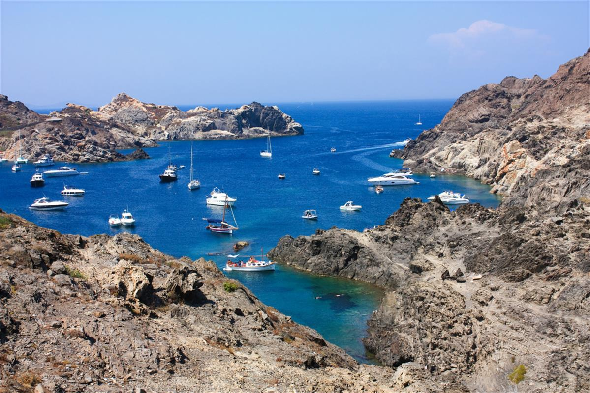
Carimbe Nas formações rochosas com o farol ao fundo — o cenário exato dos quadros de Dalí. Com Tramuntana, cabelo ao vento é parte da foto.
Dica Levar casaco corta-vento — o Cap de Creus é totalmente exposto ao Tramuntana e pode ventar forte mesmo com sol.
De Cadaqués saem barcos que circundam a baía e chegam até o Cap de Creus pela água — a perspectiva do mar para as formações rochosas que Dalí pintava é completamente diferente. Duração ~1h a 1h30 · ~€20–25/pessoa · embarque na baía central de Cadaqués.
Localizado exatamente ao lado do farol no topo do penhasco, com varanda sobre o Mediterrâneo em três direções — uma das vistas mais dramáticas para almoçar em qualquer lugar da Europa. Servem frutos do mar frescos e arrozes catalães com ingredientes do mar local. Reservar mesa na varanda — as mesas internas não têm a vista.
Quiosques de madeira das praias menores de Portlligat com sanduíches prensados (bikinis) e bebidas geladas. Valores bem abaixo dos restaurantes com vista para o mar — e a praia em frente é de graça.
Cadaqués tem a velocidade certa. Não tem nada urgente para fazer — e essa é a coisa mais rara de encontrar em qualquer viagem. A tarde aqui é para experimentar isso.
Rota sugerida a pé: bairro judeu Es Poal (ruelas estreitas e silenciosas, casas brancas com janelas azuis), galerias de arte local — Cadaqués tem uma das maiores concentrações de galerias per capita da Espanha, herança dos artistas que Dalí atraiu por décadas. Parada obrigatória: Pastisseria Mallorquina para os Taps de Cadaqués (doces típicos em formato de rolha de cortiça). Se o calor de setembro permitir: mergulho rápido na Platja Gran, a praia da vila. Às 19h30: drinks no Bar Boia Nit — terraço na praia, coquetéis clássicos, pôr do sol, e o mesmo bar que Dalí frequentava quando descia da montanha.
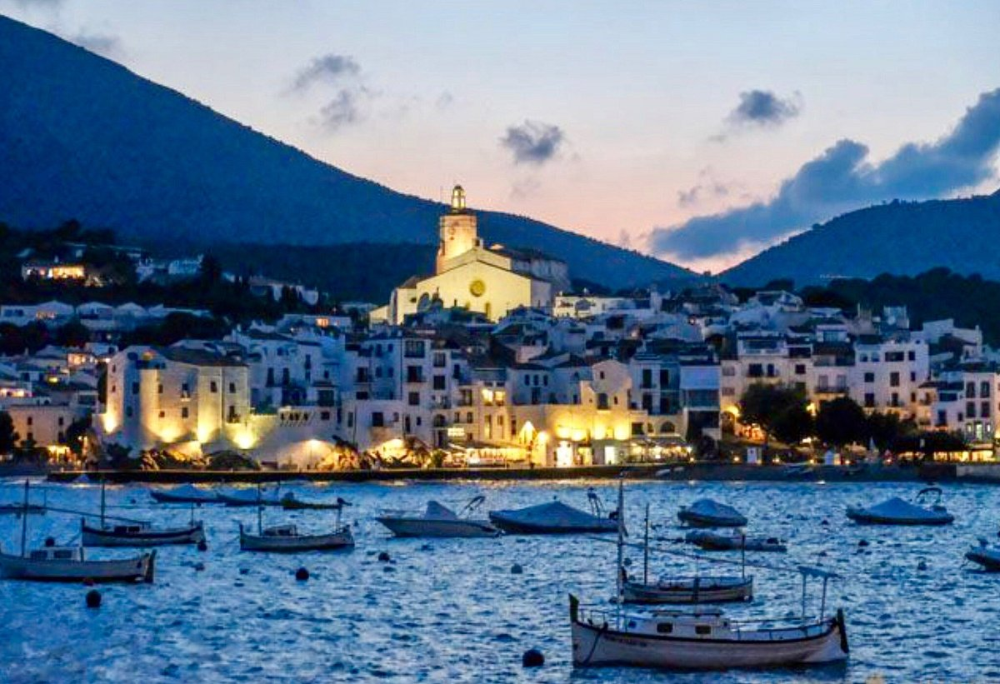
Carimbe No calçadão de Cadaqués ao pôr do sol com a Igreja de Santa Maria ao fundo — a luz dourada de setembro reflete no calçamento branco e no mar calmo ao mesmo tempo.
Dica Os Taps de Cadaqués da Pastisseria Mallorquina são o único souvenir comestível que vale a pena comprar na Costa Brava — comprar pelo menos 2 caixinhas antes do jantar.
Localizado em cima da antiga muralha medieval de Cadaqués, com vista para o mar e para a baía iluminada à noite. Especialidade da casa: Suquet de Peix — a caldeirada de peixe catalã, ensopado com peixe do dia, batata, alho e açafrão. O prato mais honesto e mais delicioso da culinária pesqueira catalã. Ambiente acolhedor, sem pretensão, completamente mediterrâneo.
Pizzarias e pequenos bares de tapas escondidos nas ruelas internas de Cadaqués. A 200 metros da orla o preço cai pela metade — prato de massa ou pizza para dividir sai bem em conta para o grupo.
Besalú foi capital de um condado medieval independente por mais de 200 anos (988–1111). A entrada da cidade é feita cruzando a Ponte Velha do século XI — pedra, torres e arco gótico no meio, sobre o rio Fluvià. Cruzar ela é literalmente entrar no Medievo.
A vila medieval de Besalú permanece surpreendentemente intacta — o casario de pedra, as torres e o bairro judeu são do século XI, não reconstruídos. A Pont Vell (Ponte Velha) com suas torres e arco gótico é o ângulo mais fotografado da Catalunha medieval. O Miqvé — banho ritual judaico do século XII descoberto em 1964 — é uma das raridades arqueológicas mais bem preservadas da Espanha.

Carimbe Da margem do rio, foto da Ponte Velha inteira refletida na água — a luz lateral da manhã faz a pedra velha ficar dourada. É o cartão-postal mais perfeito de toda a viagem.
Dica O Miqvé (Carrer del Pont 8) aceita visitas guiadas de 20 min sem reserva prévia, por ~€2. Ninguém vai até Besalú e visita o banho ritual judaico do século XII — e quase ninguém sabe que existe.
Localizado na famosa subida de escadas de Sant Martí — um dos ângulos mais românticos e mais fotografados de Girona. Bistrô de culinária contemporânea com cardápio que muda por estação. Alternativa igualmente excelente para tapas modernas: Zanpanzar (Carrer dels Calderers 10) — ambiente animado com melhor custo-benefício.
Padaria clássica famosa pelo Xuixo de Girona — doce tradicional recheado com creme por menos de €3. Para salgados maiores, os supermercados Bonpreu têm empanadas gallegas inteiras por €6.
Girona tem o bairro judeu mais bem preservado da Europa — não restaurado, não reconstruído, preservado. As muralhas que cercam a cidade têm 2.000 anos e podem ser caminhadas no topo. A catedral tem a nave gótica mais larga do mundo. Nada disso costuma constar no roteiro de quem passa por aqui.
O Call Jueu (séculos IX–XV) é o bairro judeu mais preservado da Europa — não restaurado, não reconstruído. Ruelas medievais de pedra onde o tempo parece ter parado. No centro do bairro fica o Centre Bonastruc ça Porta, no local onde viveu Nahmanides, o rabino mais influente do medievo ibérico. A entrada nas ruelas é gratuita — o museu Bonastruc ça Porta tem ingresso separado de €4.

Carimbe Nas ruelas estreitas do Call com a luz recortada pelas pedras e as paredes fechadas dos dois lados — é uma das atmosferas medievais mais intactas da Europa.
Dica Sapatos com sola de borracha são obrigatórios — o centro histórico de Girona é pavimentado com pedras medievais polidas que ficam escorregadias em qualquer descida. Tênis, não sandálias.
A Catedral de Girona tem a nave gótica mais larga do mundo — 23 metros, construída entre os séculos XI e XVIII. A escadaria monumental da entrada ficou famosa como cenário do Grande Septo de Baelor em Game of Thrones. Por dentro: o claustro românico, a tapeçaria da Criação (século XI, considerada a mais importante do mundo) e a nave que a série transformou em símbolo. As escadarias valem a visita mesmo sem entrar.
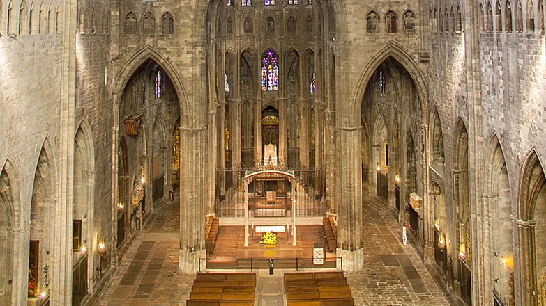
Carimbe Nas escadarias da Catedral — o grupo inteiro subindo com a fachada barroca ao fundo. É exatamente a cena de Game of Thrones e funciona mesmo para quem nunca viu a série.
Dica O ingresso de €7 já inclui audioguia — vale muito a pena, conta a história da nave e da Tapeçaria da Criação. A tapeçaria fica em sala separada ao lado da nave: não saia sem vê-la.
€7 interior da Catedral (com audioguia e claustro) · €4 Centro Bonastruc ça Porta (bairro judeu). Horário: 10h–18h30 (todos os dias, setembro). Existe o bilhete combinado Girona Museus (~€9) cobrindo vários pontos.
O Passeig de la Muralla percorre o topo das muralhas carolíngias do século IX — torres medievais, parapeitos e vista que abrange toda a cidade velha, os telhados alaranjados e, em dias claros, os Pirenéus ao fundo. O percurso tem cerca de 2 km e pode ser feito em qualquer direção. É gratuito e um dos pontos mais ignorados pelos turistas que visitam Girona.
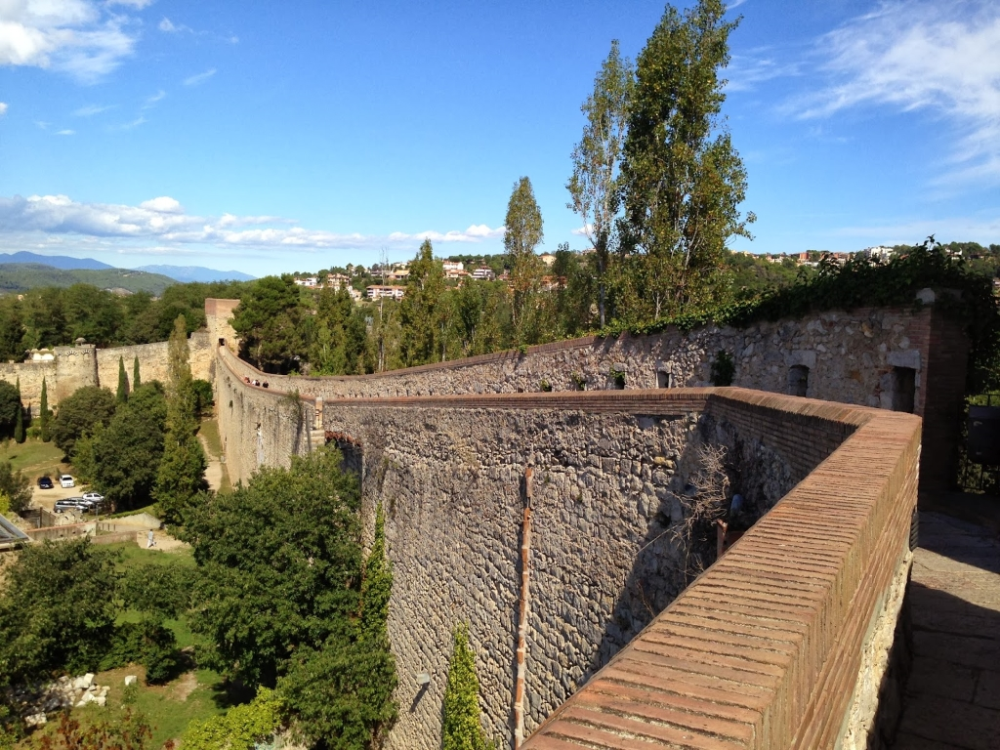
Carimbe Do topo das muralhas olhando o centro histórico — os telhados alaranjados da cidade velha com as montanhas ao fundo. Em setembro a luz da tarde é dourada e suave.
Dica Entrar pelo acesso perto da Torre de Sant Domènec e sair pelo acesso sul, que desce diretamente em direção ao rio Onyar — o caminho mais lógico para a próxima atração.
As casas coloridas do Rio Onyar são o cartão-postal mais reproduzido de Girona — fachadas em laranja, vermelho e amarelo debruçadas diretamente sobre a água, suspensas por séculos acima da corrente. O melhor ângulo é da margem oposta, olhando de leste para oeste com a luz da tarde. As cores foram inicialmente uma forma de identificar os bairros de pescadores e artesãos; com o tempo, viraram a identidade visual da cidade inteira.
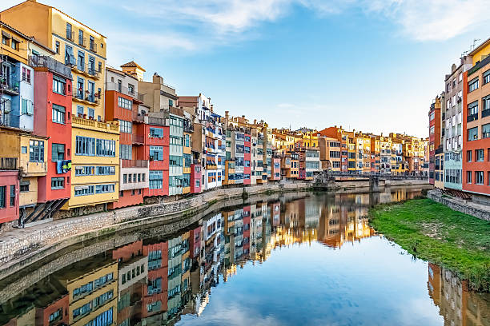
Carimbe Da margem oposta às casas coloridas olhando de leste — a luz de fim de tarde em setembro bate de frente nas fachadas e o reflexo na água duplica as cores. É o melhor momento do dia para essa foto.
Dica Do meio da Pont de Ferro (próxima atração) o ângulo é ainda melhor — a ponte elevada enquadra a fileira inteira de casas com o reflexo na água. Fazer as duas fotos: beira do rio e da ponte.
A Pont de Ferro foi projetada por Gustave Eiffel nos anos 1870 — décadas antes de ele construir a torre que leva seu nome em Paris. Faz parte de uma série de pontes metálicas que Eiffel projetou pela Europa usando o mesmo sistema de vigas treliçadas que mais tarde se tornaria sua assinatura. Do meio da ponte: o ângulo mais fotogénico das casas coloridas ao longo do Onyar, com os reflexos dobrando as cores na água.
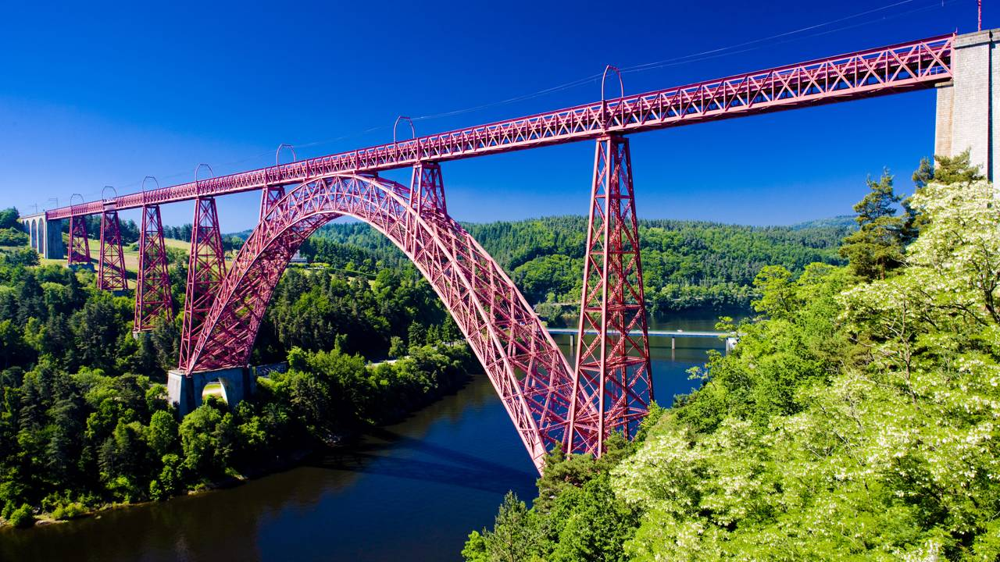
Carimbe Do meio da Pont de Ferro olhando as casas coloridas ao longo do rio — o reflexo na água duplica as cores. Fim de tarde com luz lateral é o melhor momento.
Dica Eiffel construiu esta ponte em 1877 com o mesmo sistema de vigas treliçadas que usaria na Torre de Paris — olhar a estrutura de ferro de baixo para cima deixa isso claro. É o mesmo gênio, no mesmo material, décadas antes.
Rocambolesc é a sorveteria criada por Jordi Roca, o confeiteiro do El Celler de Can Roca — restaurante de Girona com 3 estrelas Michelin e por anos eleito o melhor do mundo. Os sorvetes chegam montados como esculturas, com coberturas que incluem pipoca, chocolate artesanal, caramelo salgado e frutas de temporada. A fila anda rápido. Pedir o cone com toppings e comer sentado na beira do Onyar — é o encerramento mais bonito de qualquer dia passado em Girona.
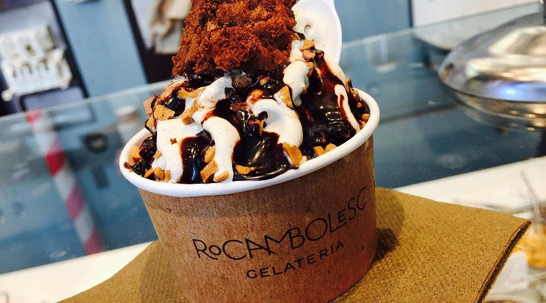
Dica A Rocambolesc tem fila, mas anda rápido. Pedir o cone com toppings e comer sentado na beira do Onyar — é o encerramento mais bonito de qualquer dia passado em Girona.
Após o dia em Girona, seguir para a nova base no litoral central da Costa Brava — Begur ou Calella de Palafrugell. Daqui se abre o trecho mais selvagem da costa: calas escondidas entre pinheiros, rochas de calcário descendo direto ao Mediterrâneo e praias sem acesso de carro. É a base para os dias seguintes até Tossa de Mar.
Duas opções dependendo da base escolhida. Begur — Turandot (Plaça de l'Església 7): culinária catalã contemporânea com ambiente acolhedor no centro histórico de Begur; favorito dos locais. Calella de Palafrugell — Tragamar ou Frenku: pé na areia na praia de Canadell, com croquetas catalãs e peixes grelhados na brasa. Após um dia de estradas e história medieval, escolher o mais próximo do hotel e jantar com calma.
Balcões e padarias locais com pizza catalã — massa de pão com vegetais assados e atum — por €2,50 a fatia. A versão humilde e saborosa da culinária do litoral catalão.
Pals é construída em pedra dourada sobre uma colina — totalmente medieval, nada reconstruído. A Torre de les Hores do século XI ainda marca as horas. Do mirante Pedró, o mar azul da Costa Brava aparece ao longe com os campos de arroz do Empordà em primeiro plano. Uma das visões mais bucólicas de toda a Catalunha.
Vila gótica do século IX completamente construída em pedra dourada sobre uma colina de 40 metros. O interior medieval — ruelas floridas, arcos de pedra, janelas geminadas — foi preservado com raríssima integridade. Destaques: a Plaça Major, o Arco da Porta Major, a Torre de les Hores do século XI com sino original e o Mirante Pedró — terraço de pedra com a vista mais bonita da região: mar ao horizonte, Pirenéus ao fundo, campos do Empordà embaixo.
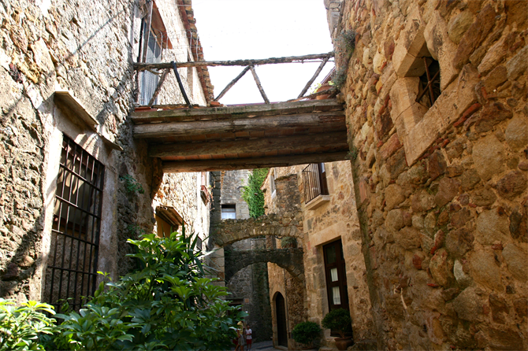
Carimbe Do mirante Pedró, foto do grupo com o mar da Costa Brava ao fundo — a distância e a altitude criam um ângulo que não parece ser da Catalunha. A luz de manhã ainda está lateral e dourada.
Dica A subida de carro vai até o estacionamento na entrada do casco histórico — de lá tudo é a pé em ruas sem saída. O calçamento de pedra irregular é bonito mas exige calçado de sola plana com aderência.
O Castelo de Begur tem vista simultânea das ilhas Medes, dos Pirenéus e de toda a costa. São 5 minutos a pé do estacionamento. É um dos 'segredos' mais bem guardados da Costa Brava — e quase ninguém sobe.
As ruínas da fortaleza do século XI no topo do morro de Begur (200 metros) oferecem um mapa vivo da Costa Brava: ilhas Medes a sul, Pirenéus ao norte (em setembro às vezes já aparecem nevados), traçado sinuoso da costa com calas escondidas nos dois sentidos. A subida são 5 minutos a pé pelo caminho pavimentado até a torre restaurada — campo aberto de 360°.
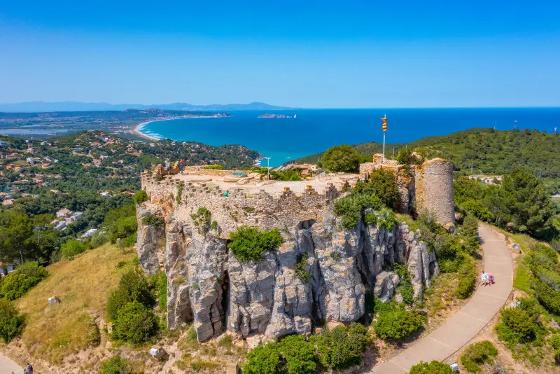
Carimbe Do topo da torre com o mar e as ilhas Medes ao fundo — o panorama de 360° e a escala do litoral catalão visível de uma vez. A foto mais impressionante e mais inesperada do dia.
Dica Chegar antes das 12h30 — o estacionamento na base tem poucos lugares e à tarde pode lotar com turistas que saem das praias. Sem ingresso, sem fila, sem cerimônia.
Duas opções no centro histórico de Begur. Restaurante Platillos: pátio interno com culinária catalã contemporânea e pratos para dividir. Casa Juanita: mais tradicional e famosa pelos peixes assados no forno a lenha — a linguada, os arrozes marinhos e os mariscos são os pedidos clássicos. Antes de sair, vale uma volta pelas Casas de Indianos — casarões coloniais do século XIX construídos por catalães que enriqueceram em Cuba.
Padarias de vila com empanados salgados, tortas de batata e sanduíches na bagete por €4. Sustenta bem o grupo para um dia longo de praias e calas da Costa Brava.
Em setembro, o Mediterrâneo atinge a temperatura mais quente do ano — entre 23°C e 25°C. As calas da Costa Brava têm menos lotação e mais beleza. É o mês mais perfeito para nadar aqui — e é exatamente onde o grupo estará.
Duas opções a 15 min de Begur: Cala Sa Tuna — enseada rústica cercada por casas de pescadores com portas coloridas, muito abrigada do vento, água calma. Cala Aiguablava — maior, com a água mais azul-turquesa e transparente de toda a Costa Brava, areia fina. O Camí de Ronda conecta as calas por trilha de pedra sobre os penhascos — 30–40 min de caminhada com vistas cinematográficas a cada curva e o mar azul lá embaixo.
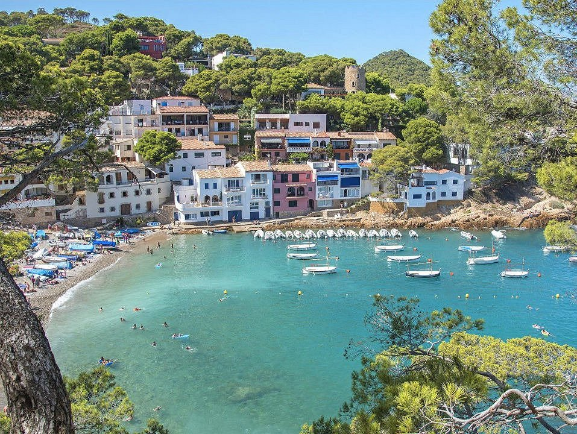
Carimbe No Camí de Ronda sobre o penhasco com a cala lá embaixo e o azul do Mediterrâneo ao fundo — é a foto de capa de revista que ninguém planeja e todo mundo tira.
Dica As praias da Costa Brava são de pedrinhas redondas, não areia — comprar water shoes (sapatilhas de neoprene) em qualquer lojinha local por ~€10. Transformam completamente a experiência de entrar e sair do mar.
Duas opções. Begur — Sa Llonga: tapas catalãs e ambiente acolhedor no centro de Begur; favorito dos locais, sem pretensão. Calella de Palafrugell — Toc al Mar: terraço com mesas pé na areia na vizinha praia de Aiguablava, famoso pelas lagostas grelhadas na brasa e pelos arrozes marinhos. Um dos restaurantes mais espetaculares para jantar em toda a Costa Brava — reservar mesa com vista para o mar.
Petiscos, frutas e bebidas compradas no mercado local, comidos ao entardecer em uma das calas como Sa Tuna. O jantar mais barato — e mais bonito — do roteiro.
Calella de Palafrugell é considerada a vila de pescadores mais bonita de toda a Catalunha. Ruas caiadas de branco, jardins de hortênsias e um calçadão de pedra que termina na beira do Mediterrâneo. A beleza aqui não é construída para turistas — ela existe há séculos.
Calella de Palafrugell é a síntese mais perfeita da Costa Brava histórica — uma vila de pescadores que cresceu sem especulação imobiliária, protegida por uma combinação de relevo e sorte. As casas são caiadas de branco com detalhes azuis, as ruas internas têm menos de três metros de largura, e os jardins privados transbordam de hortênsias cor-de-rosa. O calçadão de pedra que contorna a costa conecta pequenas praias separadas por rochedos, cada uma com seu próprio caráter.
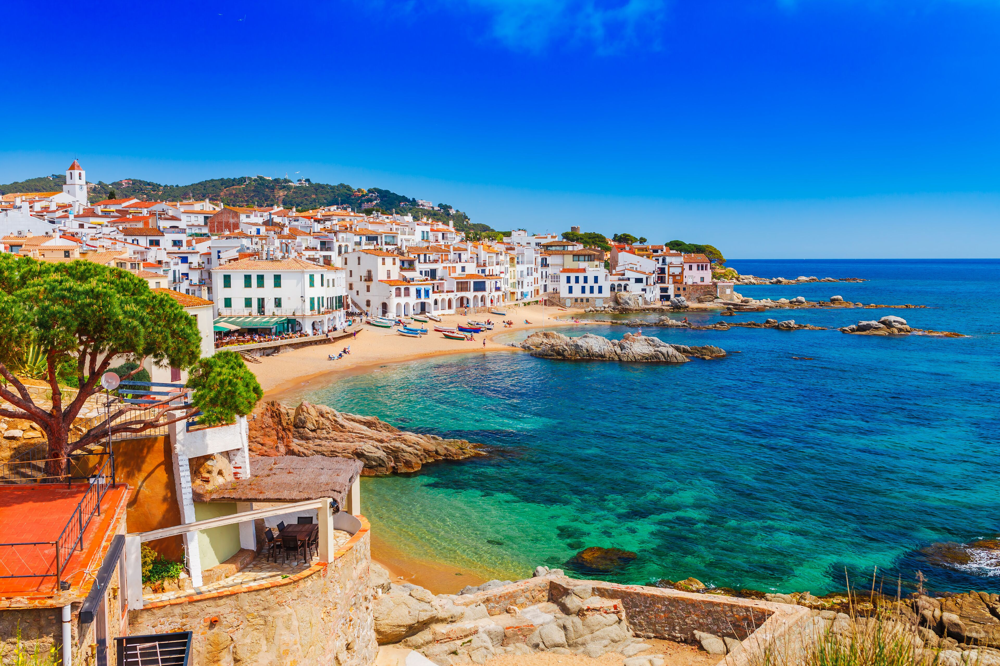
Carimbe Nas ruelas brancas da vila, ao nível dos jardins de hortênsias — o contraste das flores cor-de-rosa com as paredes brancas e o azul do céu de setembro é a imagem mais catalã de todo o roteiro.
Dica Chegar a pé pelo calçadão da Platja de Canadell antes de seguir para as Voltes — o percurso passa por recantos sem turistas que a maioria nem conhece.
As Voltes de Calella de Palafrugell são arcos brancos abobadados na beira da areia construídos no século XIX como abrigo para os pescadores. É o ângulo mais fotografado da Costa Brava e fica melhor de manhã, com a areia ainda vazia e os barcos ancorados.
As Voltes são uma sequência de arcos brancos abobadados construídos no século XIX ao longo da Platja de Port Bo — originalmente abrigo para barcos e equipamentos de pesca. Hoje funcionam como o enquadramento natural mais icônico da Costa Brava: do interior dos arcos, a vista é de barcos de madeira coloridos na areia, água turquesa e o horizonte do Mediterrâneo. Em setembro, o ângulo antes das 11h ainda mostra a praia com poucos turistas.
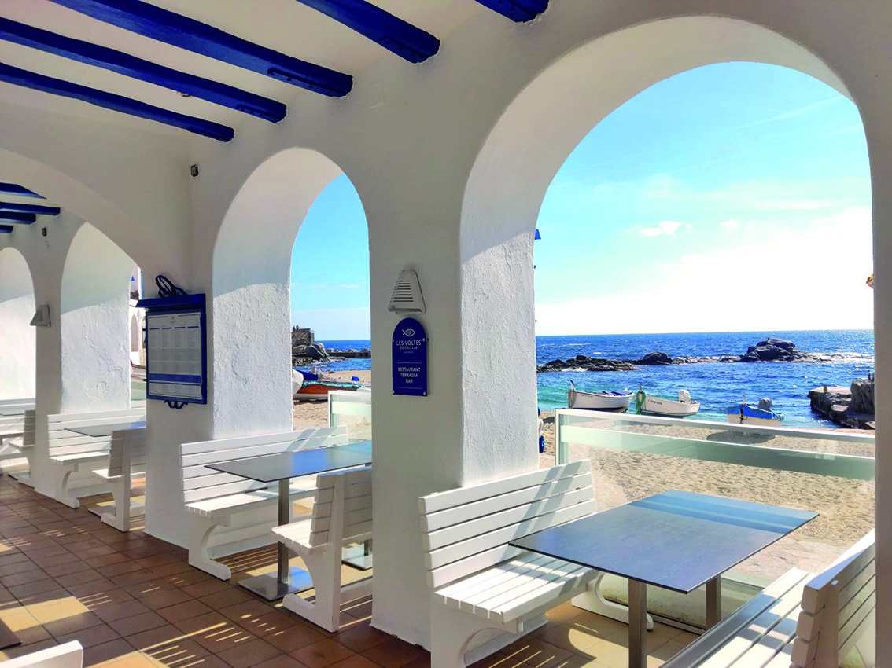
Carimbe Das Voltes com os arcos brancos enquadrando os barcos de madeira coloridos e o mar ao fundo — antes das 11h, com a areia mais vazia. É o tríptico visual mais icônico de toda a Costa Brava.
O Camí de Ronda é uma rede de trilhas que percorre toda a Costa Brava — originalmente usada pelos guardas costeiros catalães para patrulhar o litoral. O trecho de Calella para Llafranc é o mais acessível de todo o percurso: largo, parcialmente pavimentado, com subidas suaves e vistas de penhascos negros sobre o Mediterrâneo, mansões de veraneio embrenhadas na vegetação mediterrânea e pequenas enseadas que só aparecem do caminho. Ida e volta em menos de 2h sem esforço.
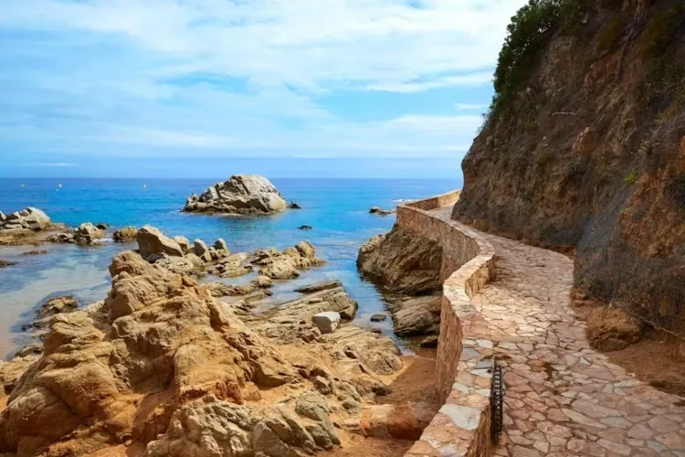
Carimbe Dos mirantes naturais sobre os penhascos ao longo do Camí — o contraste entre a rocha negra, o mediterrâneo azul e a vegetação verde de setembro é um dos melhores da Costa Brava.
Dica O Camí de Ronda de Calella para Llafranc é o trecho mais fácil e mais acessível de toda a trilha — largo, plano, pavimentado em boa parte. Perfeito para o grupo inteiro sem esforço e com visual espetacular.
Palamós é mundialmente famosa pela Gamba de Palamós — um camarão vermelho gigante pescado a 600 metros de profundidade, com sabor incrivelmente doce e intenso. É o crustáceo mais valorizado do Mediterrâneo. Pedido obrigatório: gambas grelhadas na brasa com sal grosso. Dica da tradição local: a cabeça concentra o sabor mais intenso — fazer como os catalães e não desperdiçar nada.
Peixarias do porto vendem peixe frito (pescaíto frito) ou lula frita no cone para viagem. A mesma qualidade do mar, sem o preço dos restaurantes com vista para a Gamba de Palamós.
A Gamba de Palamós é pescada a 600 metros de profundidade. O porto tem o único Museu da Pesca do Mediterrâneo. Por volta das 16h30, os barcos chegam com o peixe fresco do dia para o leilão — espetáculo cultural autêntico que poucos turistas chegam a presenciar.
O Museu da Pesca tem exposições sobre técnicas tradicionais catalãs, embarcações históricas e a história da gamba. Às 16h–16h30, os barcos chegam ao cais descarregando peixe fresco para o leilão da Llotja — caixas de prata brilhante, gritos dos leiloeiros, pescadores de botas de borracha. Uma cena completamente diferente de tudo no roteiro.
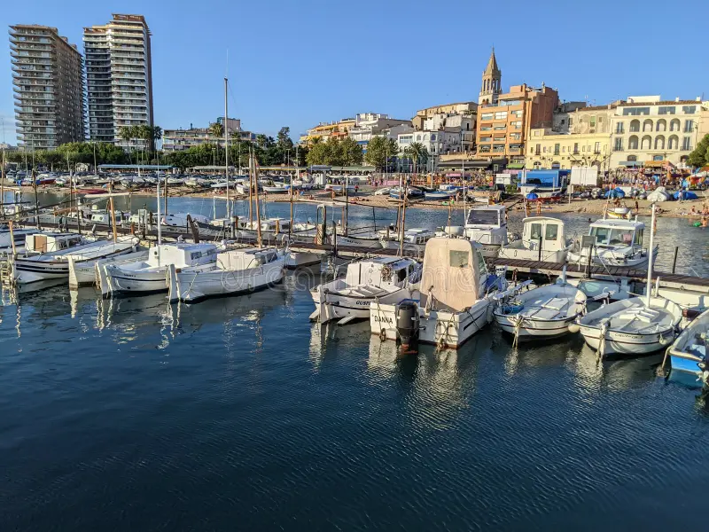
Carimbe Da muralha do porto durante a chegada dos barcos às 16h30 — os pescadores desembarcando caixas de peixe brilhante com o porto ao fundo é uma cena autêntica que não está em nenhum guia turístico.
Dica Perguntar no Museu da Pesca se há visita à sala do leilão (Llotja) — às vezes é acessível com pequena taxa. A chegada dos barcos acontece entre 16h e 16h45 dependendo do dia.
€6 adulto · €3 reduzido · gratuito aos domingos. Horários: Ter–Sáb 10h–14h e 16h–19h · Dom 10h–14h. Verificar horários no site.
A Platja de Castell é uma das últimas praias totalmente virgens da Costa Brava — sem prédios, sem bares de praia, sem guarda-sóis alugados. Protegida por lei desde 1994. No alto do morro à direita: ruínas de uma vila ibérica do século V a.C.
Protegida desde 1994 por lei municipal de Palamós, a Platja de Castell tem 450 metros de areia ladeada por floresta de pinheiros com as ruínas da vila ibérica Castell no topo do morro. Em setembro, a água está quente e a praia tem muito menos movimento. A trilha até as ruínas são 15 min a pé e dá uma vista aérea da praia e da baía.
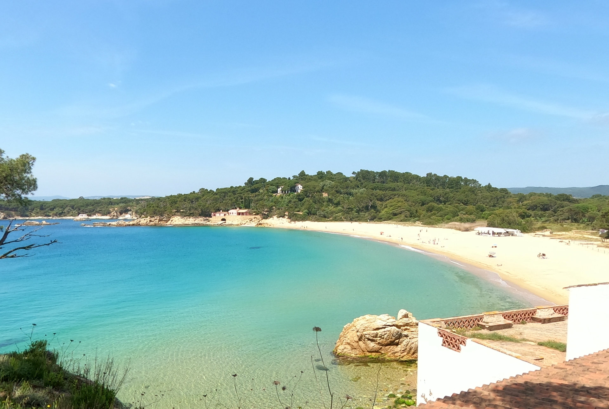
Carimbe Do topo das ruínas ibéricas olhando para baixo — a enseada com a praia deserta, os pinheiros e o mar transparente parece uma imagem do século IV a.C. Ninguém imagina que existe tão perto de Palamós.
Dica Estacionar no Parking de Castell (acesso pela GI-682) e descer a pé pelo caminho de pinheiros — 10 min. Não há lojas nem bares na praia — trazer água e snack do carro.
Para fechar a estadia no litoral central, duas opções. Begur — Sa Cova: bistrô intimista com ótimas carnes e vinhos da DO Empordà — os Garnacha e Carignan catalães são pouco conhecidos fora da Catalunha e impressionam. Calella de Palafrugell: jantar descontraído de petiscos e sangria de Cava no centrinho, com música ao vivo nos fins de semana.
Bares de bairro nas ruas internas onde batatas bravas e croquetas custam metade do preço da orla. A diferença de 200 metros do mar vale 50% a menos no cardápio.
A Vila Vella de Tossa de Mar é a única fortaleza medieval habitada ainda intacta em toda a costa catalã. Foi construída no século XII para proteger os pescadores dos piratas norte-africanos — muralhas e torres sobre o Mediterrâneo azul. É uma das imagens mais reproduzidas da Espanha.
As muralhas da Vila Vella de Tossa cercam ruínas medievais e a torre de vigia no topo de um promontório sobre o Mediterrâneo. A rota a pé pelas ruelas de pedra dentro das muralhas leva ao farol, passando pelas torres do século XII — o contraste das muralhas de pedra dourada com o azul do mar lá embaixo é uma das fotos mais famosas da Catalunha. Antes das 11h, o movimento ainda é baixo.
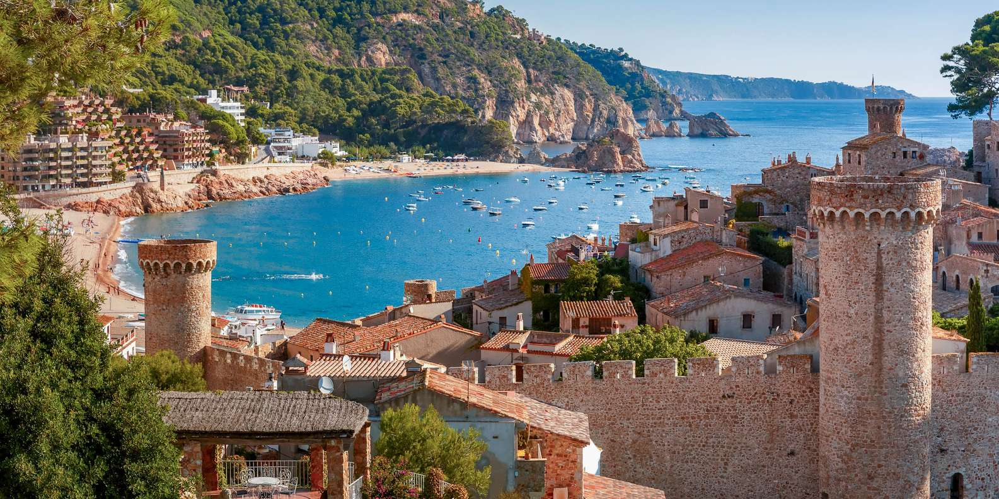
Carimbe Das muralhas sobre o mar com as torres medievais enquadradas e o Mediterrâneo azul lá embaixo — é o postal mais clássico da Costa Brava e funciona o dia todo.
Dica Estacionar no Parking Saba Terminal de Autobuses e caminhar até a praia e a Vila Vella. Não tentar estacionar dentro do centro histórico — as ruelas não comportam carro.
A Platja Gran de Tossa de Mar tem as muralhas medievais como pano de fundo direto — não é um cartão-postal, é a realidade. Em setembro, a água ainda está quente e o movimento é bem menor do que no verão.
A Platja Gran é a praia central de Tossa de Mar — 200 metros de areia dourada com as muralhas medievais da Vila Vella erguendo-se diretamente sobre a orla. A combinação de pedra centenária, água turquesa e praia de areia fina faz deste um dos cenários mais fotografados de toda a Costa Brava. Em setembro a água está entre 24°C e 26°C. Vale o mergulho antes do almoço — e a última foto com as muralhas ao fundo antes de pegar a estrada.

Carimbe Da beira d'água olhando para as muralhas medievais — praia em primeiro plano, torres e muralhas ao fundo, céu azul de setembro. É a imagem mais icônica de Tossa e uma das mais bonitas de toda a Espanha.
Dica Trazer roupa de banho embaixo da roupa — vale o mergulho antes do almoço. A água em setembro está na temperatura ideal e o movimento da praia é bem menor do que em julho e agosto.
Duas opções antes da estrada longa. Castell Vell: escondido dentro da própria muralha medieval, com arrozes e frutos do mar catalães numa atmosfera de pedra e história. Can Sophia: um pouco mais fora das muralhas, famoso pela alta qualidade dos peixes grelhados com ingredientes locais. Aproveitar o almoço com calma — a partir das 14h, a estrada é a protagonista.
Padarias próximas à praia com sanduíches de tortilla de batata por €4. Comer sentado na areia olhando as muralhas medievais — a última memória da Costa Brava antes das 4 horas de estrada rumo a Valência.
~370 km · ~3h45 de estrada — sair de Tossa pela GI-682 até o acesso à AP-7 (sentido Tarragona/Castellón/Valencia). A AP-7 é uma autoestrada excelente, duplicada e bem sinalizada — totalmente gratuita na maior parte deste trecho.
Os pinheiros e penhascos da Catalunha dão lugar gradualmente às planícies de laranjas e limoeiros da Comunidade Valenciana. A mudança ocorre depois de Tarragona. Janelas abertas na hora certa — o aroma dos laranjais é real.
Áreas de Servicio a cada 30–40 km com banheiros limpos, café e snacks. Uma pausa de 10 min perto de Tarragona ou Castellón divide a estrada no ritmo certo. Trazer água e snacks de Tossa no carro.
Hotéis na região do Ciutat Vella (centro histórico) ou no Eixample/Ruzafa permitem fazer tudo a pé à noite. Confirmar que o hotel tem estacionamento coberto. Valência tem ZBE (zona de baixa emissão) no centro — verificar restrições com a locadora.
A Plaza del Ayuntamiento é o coração cívico de Valência — rodeada por edifícios art nouveau, com chafariz central e a Câmara Municipal iluminada à noite. Depois de quatro horas de estrada, é o primeiro passo em solo valenciano.
A Plaza del Ayuntamiento tem a Câmara Municipal do século XIX iluminada de amarelo ao entardecer — escala e ambiente de capital europeia. A 5 min a pé: a Estació del Nord (1917), edifício ferroviário art nouveau com azulejos valencianos no interior, uma das estações de trem mais bonitas da Europa. Entrada gratuita para admirar o hall principal.
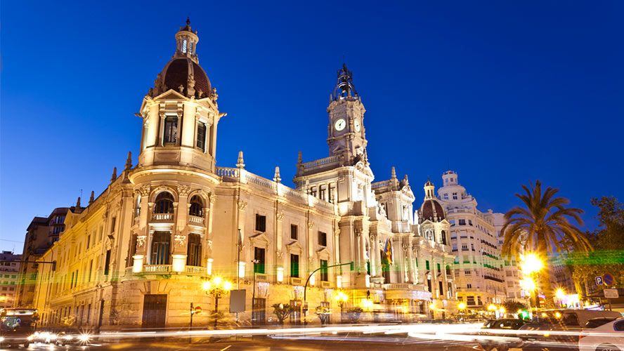
Carimbe Da Plaza del Ayuntamiento iluminada à noite com a Câmara Municipal ao fundo — a escala da praça e a iluminação amarela são de capital europeia. Primeira foto de Valência.
Dica Valência tem metrô excelente (Metrovalencia) — a partir do dia seguinte usar metro ou táxi e deixar o carro na garagem. O centro histórico tem muitas ruas pedestres.
Ruzafa é o bairro boêmio e gastronômico de Valência — bistrôs independentes, bares de vinhos naturais, ambiente jovem e criativo. O Mercatbar (Calle de Sueca 38) é o projeto popular do chef Quique Dacosta (3 estrelas Michelin): tapas valencianas criativas a preços muito honestos. Pedir obrigatoriamente a Agua de Valencia — coquetel com suco de laranja fresca da região, Cava, gim e vodca. A laranja de Valência finalmente ganha sentido como coquetel.
Redes espanholas de baixo custo perfeitas para a primeira noite em Valência. Pintxos por valores fixos muito baixos — boa forma de provar a cidade sem gastar depois de um dia longo de estrada.
A Cidade das Artes e das Ciências foi projetada por Santiago Calatrava — arquiteto valenciano. Os prédios brancos com formas orgânicas e lagos artificiais azul-turquesa parecem um cenário de ficção científica. Calatrava projetou isso para a cidade onde cresceu. A vista do complexo refletido nos lagos é a foto mais reproduzida de Valência moderna.
O complexo de Calatrava (2005) inclui L'Hemisfèric (IMAX), Museu de les Ciències e L'Oceanogràfic (aquário maior da Europa — requer ingresso separado e ~2h extras). O Umbracle — jardim de palmeiras coberto por arcos brancos de concreto — é completamente gratuito e tem a melhor vista de todo o complexo. A seguir, um trecho dos Jardins do Turia: parque linear de 9 km no antigo leito do rio desviado após as cheias de 1957 — o coração verde de Valência.
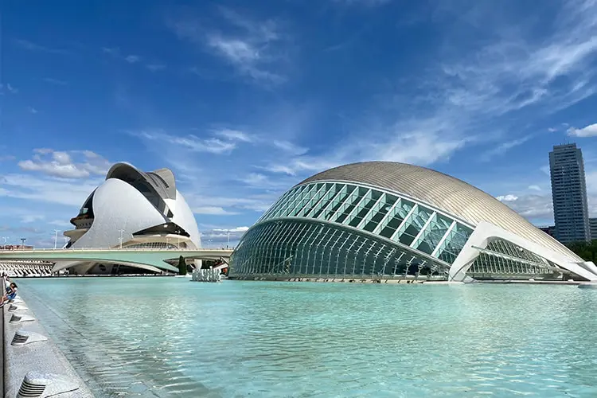
Carimbe Do lago do complexo refletindo o L'Umbracle ou L'Hemisfèric — a arquitetura branca dobrada na água cria um ângulo simétrico que parece fotomontagem. Manhã é o melhor ângulo de luz.
Dica O Umbracle e o exterior são completamente gratuitos e rendem as melhores fotos. O L'Oceanogràfic (~€40/pessoa) vale para quem quiser 2h extras — decidir no local conforme a energia do grupo.
O Mercado Central de Valência é o maior mercado art nouveau do mundo — 8.000 m² de ferro e vidro colorido com 1.200 bancas de produtos frescos. A Horchatería Santa Catalina serve Horchata de Chufa desde 1836 — a bebida mais típica de Valência e que não existe em lugar nenhum do mundo igual ao original.
O Mercado Central (1928) tem cúpula de vidro e ferro art nouveau, azulejos e flores. Vale mais pela arquitetura que pelas compras — entrar, observar, cheirar e provar. A 3 min a pé: a Horchatería Santa Catalina (Plaça de Santa Caterina, desde 1836), que serve a Horchata de Chufa original — bebida vegetal feita de chufa (tubérculo cultivado só na região valenciana), gelada e levemente doce. Pedir com fartons.

Carimbe De dentro do Mercado Central olhando para cima — a cúpula de vidro e ferro com a luz entrando em ângulo é uma das construções art nouveau mais fotogênicas da Europa.
Dica A Horchata da Santa Catalina vem com fartons — pedir o conjunto completo e comer na mesinha na calçada. É a combinação de sabor mais icônica de toda a culinária valenciana.
A verdadeira Paella nasceu em Valência e, por tradição rigorosa, deve ser comida no almoço — nunca no jantar. O La Pepica (fundado em 1898, frequentado por Hemingway) serve paella valenciana tradicional com fotos históricas nas paredes. O Casa Carmela (reserva com semanas de antecedência) faz paella no fogo a lenha de laranjeira. Atenção ao Socarrat: a casca de arroz crocante que gruda no fundo da panela de ferro é a parte mais nobre do prato — disputar colher por colher.
Bancas do Mercado Central com porções individuais de Paella Valenciana quentinha para viagem. Almoçar o prato mais famoso do país por uma pechincha, logo após a visita à cúpula art nouveau do mercado.
El Miguelete tem 207 degraus e é a torre da catedral de Valência — construída no século XIV. Do topo, o pôr do sol sobre os telhados de Valência e o Mediterrâneo ao fundo. É a despedida visual mais bonita que qualquer cidade pode dar.
Torres de Serranos: porta medieval da muralha (século XIV) com subida ao topo para vista panorâmica do centro e dos Jardins do Turia. Bairro de El Carmen: o mais antigo de Valência, famoso pelo contraste entre arquitetura gótica e grafites artísticos de artistas internacionais — uma das coleções de arte urbana mais impressionantes da Espanha. El Miguelete: torre da Catedral (207 degraus) com a vista mais bonita da cidade ao pôr do sol em setembro.
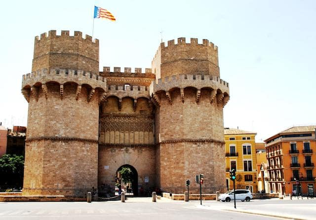
Carimbe Do topo do Miguelete ao pôr do sol — os telhados de Valência em primeiro plano e o Mediterrâneo ao fundo. É a despedida mais bonita de qualquer viagem por terras espanholas.
Dica Subir o Miguelete antes das 18h30 — o pôr do sol em setembro é entre 19h30 e 20h, e a subida leva 20 min. São 207 degraus de espiral sem elevador — ir com calma.
€2,50 Torre El Miguelete · €5 Torres de Serranos · Interior da Catedral: gratuito. Horário Miguelete: 10h–18h30 (seg–sáb) · 12h–18h30 (dom). Confirmar no site oficial.
Para fechar a viagem com chave de ouro, duas opções. El Poblet (Carrer de Correus 8): restaurante com estrela Michelin de Quique Dacosta — tapas valencianas de alto nível. Bodega Casa Montaña (Calle de José Benlliure 69, Canyamelar): taverna histórica fundada em 1836, vinhos diretamente do barril, mesas simples de madeira e as melhores tapas de jamón e croquetas de bacalhau de toda Valência. Nenhum dos dois tem pretensão de fine dining — têm autenticidade, que vale mais.
El Carmen é cheio de kebabs e falafels gigantes por €5. Se preferirem a tradição local: horchata gelada com fartons (pãezinhos doces) por €4 em qualquer quiosque de rua — o encerramento mais valenciano possível.
Melhor app para rotas urbanas em Barcelona — supera o Google Maps mostrando em tempo real o tempo de espera de ônibus e metrôs.
Indispensáveis para a navegação de carro a partir do Dia 04 na Costa Brava e na rota até Valência.
Pagamento das vagas Zona Azul/Verde nas ruas das vilas da Costa Brava direto pelo celular — sem precisar de moedas para o parquímetro.
App oficial dos táxis pretos e amarelos de Barcelona e Valência. Preço fechado antes da corrida, sem surpresas.
Motoristas privados nas grandes cidades. Ideal para comparar tarifas ao se deslocarem em grupo para pontos distantes.
App oficial dos transportes de Barcelona para consultar linhas, horários e o saldo do cartão T-Familiar.
Lotes liberados aos poucos · sem reembolso · é o valor mais barato
Ingressos antecipados · tours com guia em português · cancelamento flexível
⚠ Líquidos: máx. 100 ml por embalagem · todos em saquinho zip transparente na bagagem de mão.
Viajar é carimbar histórias,
Boa viagem!
Este roteiro foi pensado para otimizar deslocamentos, horários e ritmo, garantindo a melhor experiência dentro do tempo disponível. Mas viagem não é um roteiro engessado — é experiência viva. Ajuste o que fizer sentido, prolongue o que encantar e adapte o dia conforme a sua energia.

Nós temos uma filosofia de vida:
"Pelo menos uma vez ao ano conhecer
um lugar que nunca fomos antes"
E o planejamento nos proporciona viver isso.